<!doctype html>
<html lang="en">
<head>
  <meta charset="utf-8">
  <meta name="viewport" content="width=device-width, initial-scale=1">
  <title>arxiv digest — 2026-07-28</title>
  <style>
:root {
  --bg: #ffffff;
  --fg: #1f2328;
  --muted: #59636e;
  --border: #d0d7de;
  --card: #f6f8fa;
  --link: #0969da;
}
body {
  max-width: 980px;
  margin: 0 auto;
  padding: 2rem 1rem 5rem;
  font-family: -apple-system, BlinkMacSystemFont, "Segoe UI", Helvetica, Arial, sans-serif;
  line-height: 1.55;
  color: var(--fg);
  background: var(--bg);
}
a { color: var(--link); }
img { max-width: 100%; height: auto; }
pre, code { background: var(--card); border-radius: 6px; }
pre { padding: 1rem; overflow-x: auto; }
blockquote { border-left: 4px solid var(--border); padding-left: 1rem; color: var(--muted); }
details { margin: 0.6rem 0; }
summary { cursor: pointer; font-weight: 600; }
.paper-figures-scroll {
  display: flex;
  gap: 1rem;
  overflow-x: auto;
  overscroll-behavior-x: contain;
  padding: 0.75rem 0.25rem 1rem;
  margin: 1rem 0 1.25rem;
  border-top: 1px solid var(--border);
  border-bottom: 1px solid var(--border);
  scroll-snap-type: x proximity;
}
.paper-figure-card {
  flex: 0 0 min(260px, 72vw);
  scroll-snap-align: start;
  background: var(--card);
  border: 1px solid var(--border);
  border-radius: 12px;
  padding: 0.55rem;
}
.paper-figure-card img {
  display: block;
  width: 100%;
  max-height: 240px;
  object-fit: contain;
  background: white;
  border-radius: 8px;
}
.paper-figure-caption {
  display: block;
  margin-top: 0.5rem;
  color: var(--muted);
  font-size: 0.85rem;
}
.figure-strip-hint {
  color: var(--muted);
  font-size: 0.9rem;
  margin-bottom: -0.3rem;
}
</style>
  <!-- MathJax: renders $...$ inline math and $$...$$ display math, plus
       \(...\) and \[...\]. Loaded from the official CDN; works offline
       once cached. Configured to skip code/pre blocks so arxiv IDs that
       look like dollar amounts don't get mangled. -->
  <script>
    window.MathJax = {
      tex: {
        inlineMath: [['$', '$'], ['\\(', '\\)']],
        displayMath: [['$$', '$$'], ['\\[', '\\]']],
        processEscapes: true,
        processEnvironments: true
      },
      options: {
        skipHtmlTags: ['script', 'noscript', 'style', 'textarea', 'pre', 'code'],
        ignoreHtmlClass: 'tex2jax_ignore',
        processHtmlClass: 'tex2jax_process'
      }
    };
  </script>
  <script id="MathJax-script" async
    src="https://cdn.jsdelivr.net/npm/mathjax@3/es5/tex-chtml.js"></script>
</head>
<body>
<header style="background-color: #333; color: white; padding: 15px; margin-bottom: 20px;">
  <h1 style="margin: 0; font-size: 24px;">
    <a href="https://ochelpan.github.io/arXiv_clean/" style="color: white; text-decoration: none;">Main</a>
  </h1>
</header>

<h1>Daily arXiv Report</h1>

<hr>
<p>
<a href="index.html">← Index</a>
 · <a href="papers_03.html">← Previous</a> · <a href="papers_05.html">Next →</a>
</p>
<hr>

<h2>Papers 61–80</h2>
<p><a id="paper-2607.22372"></a></p>
<h3 id="quantum-informed-surrogate-sampling-for-combinatorial-optimization"><a href="http://arxiv.org/abs/2607.22372v1">Quantum-informed surrogate sampling for combinatorial optimization</a></h3>
<p><strong>Authors:</strong> Elisabeth Wybo, Jernej Rudi Finžgar<br>
<strong>Type:</strong> both · <strong>Category:</strong> disordered systems and neural networks · <strong>PDF:</strong> <a href="https://arxiv.org/pdf/2607.22372v1">https://arxiv.org/pdf/2607.22372v1</a><br>
<strong>Analysis basis:</strong> full PDF text, analyzed in chunks
<strong>Topic relevance:</strong> <code>QC/QI experiment</code> <strong>1/5</strong> · <code>methods for driven-dissipative</code> <strong>1/5</strong></p>
<div class="figure-strip-hint">↔ Scroll figures horizontally</div>
<div class="paper-figures-scroll">
<figure class="paper-figure-card">
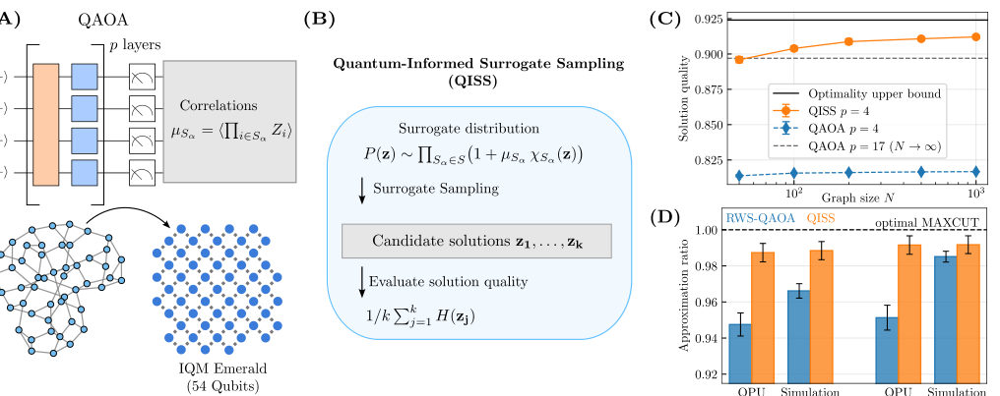
<figcaption class="paper-figure-caption"><b>Fig 1.</b> FIG. 1. Overview of the surrogate sampling procedure. (A) We estimate the correlations µSα from a depth-p QAOA circuit. The circuit can be executed on a quantum device, such as the 54-qubit IQM Emerald QPU with square-grid connectivity. (B) From a polynomially sized set of correlations, we construct a factor distribution P(z) as a classical surrogate. We sample candidate solutions from it by MCMC and evaluate their quality. We refer to this procedure as Quantum-Informed Surrogate Sampling (QISS). (C) Sampling from the classical surrogate improves the solution quality compared to vanilla QAOA. Here, we consider the MaxCut problem on 3-regular graphs and a p = 4 QAOA circuit. We include all...</figcaption>
</figure>
<figure class="paper-figure-card">
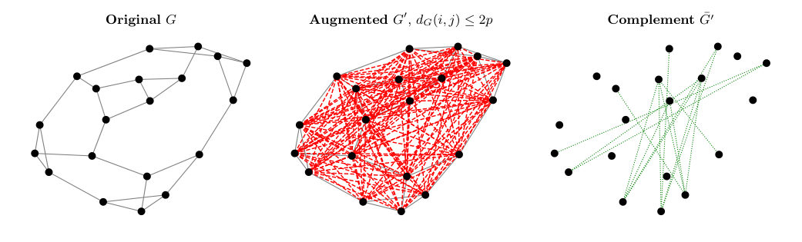
<figcaption class="paper-figure-caption"><b>Fig 2.</b> FIG. 2. Starting from an original graph G, we construct an augmented graph G′. There is an edge in the augemented graph if dG(i, j) ≤2p, in this figure we consider p = 2. We also show the complement graph of G′ to highlight the distinction from the complete graph.</figcaption>
</figure>
<figure class="paper-figure-card">
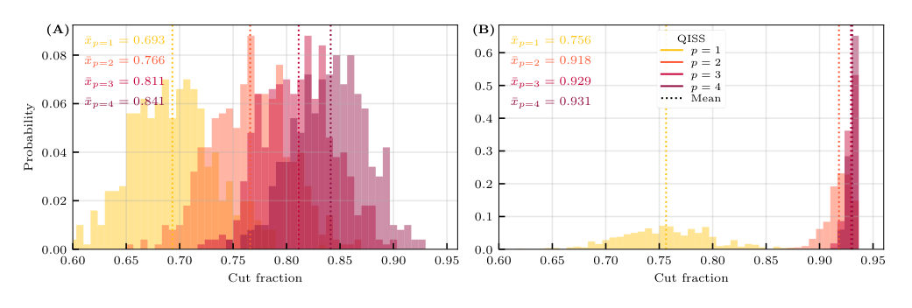
<figcaption class="paper-figure-caption"><b>Fig 3.</b> FIG. 3. Cut fractions obtained with QISS for a single MaxCut instance on a 3-regular graph of size N = 100. The histograms show the cut fractions corresponding to 500 samples generated via QISS based on the mean value input. (A) Only the QAOA edge correlators E are included in the sampling model. (B) All non-zero QAOA edge correlators E′ are included in the sampling model. For this particular instance, the optimal cut fraction is 14/15 (= 0.933...).</figcaption>
</figure>
<figure class="paper-figure-card">
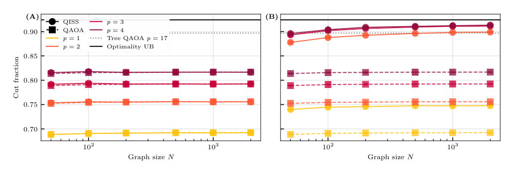
<figcaption class="paper-figure-caption"><b>Fig 4.</b> FIG. 4. QISS for MaxCut on 3-regular graphs based on QAOA correlations. Average cut fractions from vanilla QAOA and from QISS, for various QAOA depths p, averaged over 40 instances per system size N. (A) Only the edge correlators are included in the surrogate model; QISS reproduces the QAOA cut fraction. (B) All non-zero correlators within the light cone (dG(i, j) ≤2p) are included, giving a large improvement over vanilla QAOA. The dotted line marks vanilla tree QAOA at p = 17 [35].</figcaption>
</figure>
<figure class="paper-figure-card">
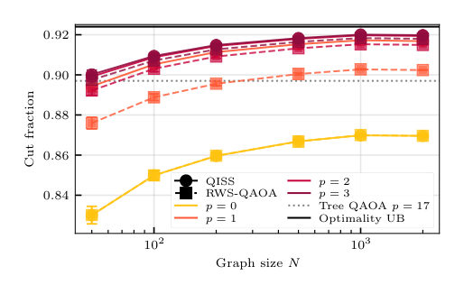
<figcaption class="paper-figure-caption"><b>Fig 5.</b> FIG. 5. QISS for MaxCut on 3-regular graphs based on RWS-QAOA correlations. Average cut fractions obtained from the RWS-QAOA and combined with QISS postprocessing at different depths p. Here, p = 0 corresponds to the expectation values estimated with respect to the initial RWS-QAOA state; the QISS postprocessing is unable to improve. For reference, the p = 17 mean cut fraction from vanilla QAOA is shown [35]. QISS improves upon the supplied RWS-QAOA correlations, with the relative improvement decreasing as we approach the optimality upper bound with increasing p.</figcaption>
</figure>
</div>

<p><strong>Summary.</strong> This paper introduces Quantum-Informed Surrogate Sampling (QISS), a post-processing technique that uses low-order correlations measured from shallow quantum circuits (like QAOA) to build an effective classical probability distribution. This surrogate distribution is then sampled via MCMC to generate candidate solutions for combinatorial optimization problems like MaxCut, achieving performance superior to the raw output of the quantum algorithm itself.</p>
<p><strong>Why it may be interesting.</strong> It provides a concrete pathway for near-term quantum devices: instead of demanding perfect state preparation or deep circuits, it extracts robust statistical information that can be leveraged by scalable classical algorithms to solve hard optimization problems.</p>
<details>
<summary>Detailed structure</summary>
<p><strong>Main problem.</strong> Developing a post-processing framework, Quantum-Informed Surrogate Sampling (QISS), to generate high-quality candidate solutions for computationally hard combinatorial optimization problems.</p>
<p><strong>Main result.</strong> QISS significantly outperforms vanilla QAOA by using low-order quantum correlations as input to a classical sampling procedure, showing noise resilience on near-term hardware.</p>
<p><strong>Method.</strong> The method estimates local observables (low-weight correlations) from shallow quantum circuits and uses these values to construct a factorized surrogate probability distribution over the solution space, which is then sampled via MCMC.</p>
<p><strong>Model / system.</strong> The framework applies to classical optimization problems like MaxCut and Maximum Independent Set. The underlying physics involves using QAOA on qubits (validated on a 54-qubit QPU) to generate these informative statistics.</p>
<p><strong>Key observables.</strong> Cut fraction, Energy density ($\epsilon$), low-weight correlations ($\mu_{S_\alpha}$), and comparison against theoretical bounds like the SDP value or Parisi energy.</p>
<p><strong>Important parameters / regimes.</strong> Circuit depth ($p$), inverse temperature ($eta$), and graph structure (e.g., 3-regular graphs).</p>
<p><strong>Assumptions / limitations.</strong> The method assumes that low-weight expectation values are sufficient to capture the necessary structural information, allowing for classical sampling without needing full quantum state simulation.</p>
<p><strong>Figures summary.</strong> Figures illustrate the QISS procedure: estimating correlations from QAOA (Fig. 1A), constructing a factor distribution (Fig. 1B), and showing improved solution quality over vanilla QAOA (Fig. 1C). Other figures compare QISS performance against other algorithms for MaxCut/MIS.</p>
<p><strong>Paper structure.</strong> The paper introduces the QISS framework, details how low-order correlations from shallow circuits are used to build a classical surrogate distribution, demonstrates its superior performance over direct quantum sampling methods (QAOA), and validates its noise resilience on real hardware.</p>
</details>
<details>
<summary>Abstract</summary>
<p>We introduce Quantum-Informed Surrogate Sampling (QISS), a post-processing framework that generates candidate solutions to combinatorial optimization problems from low-weight correlations of shallow quantum circuits. The quantum device estimates local observables, which are directly accessible by repeated measurements and for which a wide range of error-mitigation tools are available, while candidate solutions are generated classically without explicit dependence on the combinatorial optimization problem itself. We evaluate QISS on Maximum Cut and Maximum Independent Set problems on $N$ variables and show that only $O(N)$ low-order correlators from shallow circuits suffice to produce competitive solutions that surpass vanilla QAOA. For MaxCut on 3-regular graphs, QISS from $p=3$ QAOA correlators outperforms vanilla QAOA at $p=17$ on average, with further improvements possible by warm-starting QAOA. We validate the procedure on the 54-qubit IQM Emerald quantum device and demonstrate its noise resilience. Our results support a regime for near-term optimization in which shallow circuits serve not as direct samplers but as generators of informative statistics for scalable classical sampling.</p>
</details>
<p><sub><a href="#top">↑ back to top</a></sub></p>

<p><a id="paper-2607.21868"></a></p>
<h3 id="quasi-two-dimensional-quantum-antiferromagnetism-in-the-distorted-honeycomb-compound-kcuinpo42"><a href="http://arxiv.org/abs/2607.21868v1">Quasi-Two-Dimensional Quantum Antiferromagnetism in the Distorted Honeycomb Compound KCuIn(PO4)2</a></h3>
<p><strong>Authors:</strong> S. Gayen, S. S. Ali, V. K. Singh, B. Koteswararao, S. K. Panda<br>
<strong>Type:</strong> both · <strong>Category:</strong> strongly correlated electrons · <strong>PDF:</strong> <a href="https://arxiv.org/pdf/2607.21868v1">https://arxiv.org/pdf/2607.21868v1</a><br>
<strong>Analysis basis:</strong> full PDF text, analyzed in chunks
<strong>Topic relevance:</strong> <code>analog quantum simulation</code> <strong>1/5</strong> · <code>exotic spin models in light-matter</code> <strong>1/5</strong></p>
<div class="figure-strip-hint">↔ Scroll figures horizontally</div>
<div class="paper-figures-scroll">
<figure class="paper-figure-card">
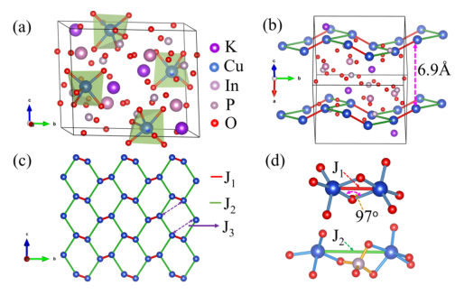
<figcaption class="paper-figure-caption"><b>Fig 1.</b> FIG. 1. (a) Crystal structure of KCuIn(PO4)2, highlighting the local environment around Cu-ions. (b) Each layer of Cu ions forming the distorted honeycomb network in the b-c plane is displayed, and the large interlayer separation (= 6.9 Å) between adjacent layers along the a-axis is highlighted, demonstrating the effectively quasi-two- dimensional nature of the magnetic lattice. (c) Each Cu-ion layer is shown separately to illustrate the formation of the distorted honey- comb geometry, with the first-, second-, and third-nearest-neighbor (NN) Cu–Cu exchange couplings labeled as J1, J2, and J3, respec- tively. (d) Superexchange paths between Cu ions for the first- and second-nearest-neighbor...</figcaption>
</figure>
<figure class="paper-figure-card">
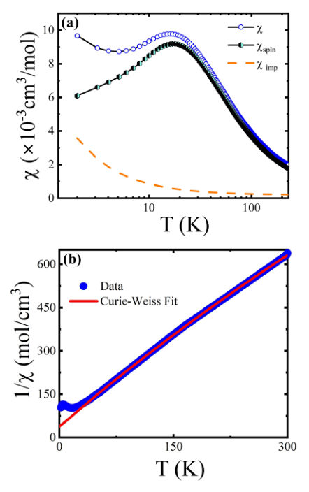
<figcaption class="paper-figure-caption"><b>Fig 2.</b> FIG. 2. (a) The temperature dependence of the magnetic suscepti- bility χ(T) is presented. The blue open circles represent the mea- sured experimental data collected at an applied field of 1 T. The yellow dashed curve illustrates the impurity contribution, χimp(T). The intrinsic spin susceptibility, χspin(T), is extracted by subtracting χimp(T) from the total measured χ(T). (b) The inverse susceptibil- ity 1/χ is plotted as a function of temperature T. The solid red line represents the Curie-Weiss fit, highlighting the linear behavior in the high-temperature regime.</figcaption>
</figure>
<figure class="paper-figure-card">
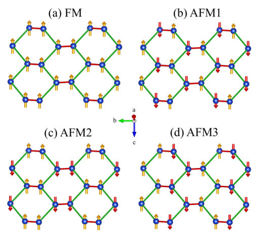
<figcaption class="paper-figure-caption"><b>Fig 3.</b> FIG. 3. Four distinct Cu2+ spin configurations within the distorted honeycomb plane are shown: (a) a ferromagnetic state with all spins aligned parallel, (b) both first- and second-nearest-neighbor interac- tions are antiferromagnetic, (c) the first-nearest-neighbor interaction is ferromagnetic while the second-nearest-neighbor interaction is an- tiferromagnetic, and (d) the first-nearest-neighbor interaction is an- tiferromagnetic while the second-nearest-neighbor interaction is fer- romagnetic.</figcaption>
</figure>
<figure class="paper-figure-card">
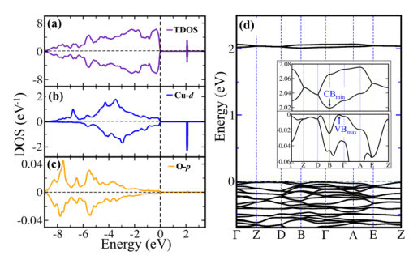
<figcaption class="paper-figure-caption"><b>Fig 4.</b> FIG. 4. (a) Total electronic density of states (DOS) of KCuIn(PO4)2 . (b) Partial density of states corresponding to the Cu–d orbitals and (c) the O–p orbitals. (d) Electronic band dispersion plotted along the high-symmetry directions of the Brillouin zone. The inset highlights the positions of the valence-band maximum and conduction-band minimum, illustrating the indirect-gap nature of the insulating ground state. The Fermi energy is set at 0 eV for all the figures.</figcaption>
</figure>
<figure class="paper-figure-card">
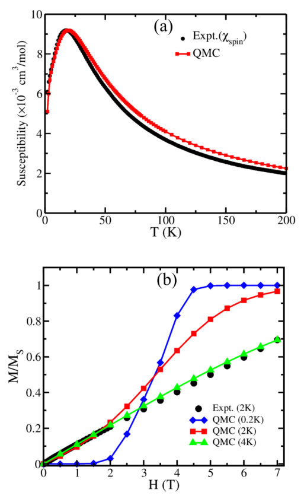
<figcaption class="paper-figure-caption"><b>Fig 5.</b> FIG. 5. (a) Temperature-dependent magnetic susceptibility calcu- lated using quantum Monte Carlo simulations for the effective spin- 1</figcaption>
</figure>
</div>

<p><strong>Summary.</strong> The authors theoretically and experimentally characterize $    ext{KCuIn}( ext{PO}_4)_2$ as a quasi-two-dimensional quantum antiferromagnet. They use DFT to determine its insulating nature and calculate magnetic exchange couplings, which reveal a spin-chain like structure. QMC simulations then successfully model the material's low-temperature magnetic susceptibility, confirming its behavior as a strongly correlated quantum magnet.</p>
<p><strong>Why it may be interesting.</strong> This work provides a detailed case study of how fundamental solid-state theory (DFT) combined with advanced many-body simulation techniques (QMC) can map out the phase diagram and underlying physics of real, complex quantum magnets.</p>
<details>
<summary>Detailed structure</summary>
<p><strong>Main problem.</strong> The study investigates the electronic structure and magnetic properties of the quasi-two-dimensional quantum antiferromagnet $    ext{KCuIn}( ext{PO}_4)_2$. The goal is to establish a consistent theoretical framework linking its electronic structure, exchange interactions, and collective magnetic behavior.</p>
<p><strong>Main result.</strong> The compound is confirmed as a quasi-two-dimensional quantum antiferromagnet composed of weakly coupled spin chains. Quantum Monte Carlo simulations successfully reproduce experimental signatures like the susceptibility maximum and field-induced saturation characteristic of low-dimensional magnetism.</p>
<p><strong>Method.</strong> A combination of Density Functional Theory (DFT) calculations using GGA+U, microscopic evaluation of magnetic exchange interactions via the magnetic force theorem, and large-scale Quantum Monte Carlo (QMC) simulations were employed. Experimental measurements included magnetization and susceptibility ($\chi(T)$).</p>
<p><strong>Model / system.</strong> The physical system is the distorted honeycomb compound $   ext{KCuIn}( ext{PO}_4)_2$, featuring localized $    ext{Cu}^{2+}$ ($S=1/2$) moments. The magnetism is modeled using an effective spin-$1/2$ Heisenberg Hamiltonian incorporating dominant isotropic exchange interactions and single-ion anisotropy.</p>
<p><strong>Key observables.</strong> Temperature-dependent magnetic susceptibility ($\chi(T)$), field-dependent magnetization, calculated exchange couplings ($J_{NNN}$ dominating $J_{NN}$), and the insulating band gap ($\approx 2.0 	ext{ eV}$).</p>
<p><strong>Important parameters / regimes.</strong> The ratio of next-nearest-neighbor to nearest-neighbor coupling ($J_2/J_1$) is identified as the key parameter controlling the magnetic ground state regime.</p>
<p><strong>Assumptions / limitations.</strong> The system can be accurately described by an effective spin-$1/2$ Heisenberg Hamiltonian, and interlayer couplings are negligible due to structural separation.</p>
<p><strong>Figures summary.</strong> Figure 1 illustrates the crystal structure showing the distorted honeycomb network. Figure 2 presents experimental data for $\chi(T)$ vs $T$, which is compared against theoretical fits.</p>
<p><strong>Paper structure.</strong> The paper proceeds by first establishing the electronic structure using DFT, then calculating the magnetic exchange interactions to derive an effective Hamiltonian. Finally, QMC simulations are used on this model to reproduce and explain the measured low-temperature magnetic response.</p>
</details>
<details>
<summary>Abstract</summary>
<p>We investigate the electronic structure and magnetic properties of the distorted honeycomb lattice compound KCuInP2O8 through a combination of experimental measurements, first principles calculations and quantum monte carlo simulations. Density functional theory calculations within the GGA+U framework establishes KCuInP2O8 as an indirect gap insulator with Cu2+ local moments and finite magnetocrystalline anisotropy arising from spin orbit coupling. A microscopic evaluation of magnetic exchange interactions using the magnetic force theorem reveals a pronounced hierarchy of couplings, with the next nearest neighbor interaction dominating over the nearest neighbor exchange, while interlayer couplings remain negligible. This exchange hierarchy naturally maps the system onto weakly coupled antiferromagnetic spin chains embedded in a distorted honeycomb lattice. Motivated by the ab initio estimated exchange interactions, we construct an effective spin half Hamiltonian and investigate its magnetic response using large scale quantum Monte Carlo simulations. The calculated temperature dependent susceptibility and field dependent magnetization quantitatively reproduce the experimental behavior and capture key signatures of low dimensional quantum magnetism, including a broad susceptibility maximum and a field induced saturation at low temperatures. Our results establish KCuInP2O8 as a quasi-two-dimensional quantum antiferromagnet composed of coupled spin chains, providing a consistent theoretical framework that links electronic structure, exchange interactions, and collective magnetic behavior.</p>
</details>
<p><sub><a href="#top">↑ back to top</a></sub></p>

<p><a id="paper-2607.22315"></a></p>
<h3 id="robustness-of-off-axis-electron-vortices-in-nonuniform-magnetic-fields"><a href="http://arxiv.org/abs/2607.22315v1">Robustness of Off-Axis Electron Vortices in Nonuniform Magnetic Fields</a></h3>
<p><strong>Authors:</strong> Hui-Dong Huang, Qi Meng, Zhi-Bin Wang, Liang Lu, Jian Chen, Li-Ping Zou<br>
<strong>Type:</strong> both · <strong>Category:</strong> other · <strong>PDF:</strong> <a href="https://arxiv.org/pdf/2607.22315v1">https://arxiv.org/pdf/2607.22315v1</a><br>
<strong>Analysis basis:</strong> full PDF text, analyzed in chunks
<strong>Topic relevance:</strong> <code>methods for driven-dissipative</code> <strong>1/5</strong> · <code>non-equilibrium dynamics</code> <strong>1/5</strong></p>
<div class="figure-strip-hint">↔ Scroll figures horizontally</div>
<div class="paper-figures-scroll">
<figure class="paper-figure-card">
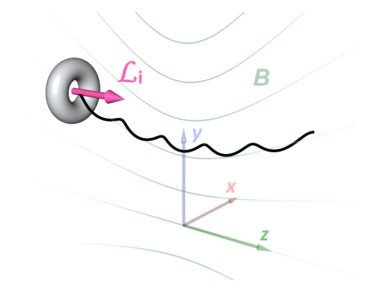
<figcaption class="paper-figure-caption"><b>Fig 1.</b> FIG. 1. An off-axis vortex wavepacket propagating through a magnetic lens. The centroid follows a helical trajectory that winds around the curved magnetic field lines, while the in- trinsic OAM, defined relative to the centroid, is not protected by axial symmetry alone.</figcaption>
</figure>
<figure class="paper-figure-card">
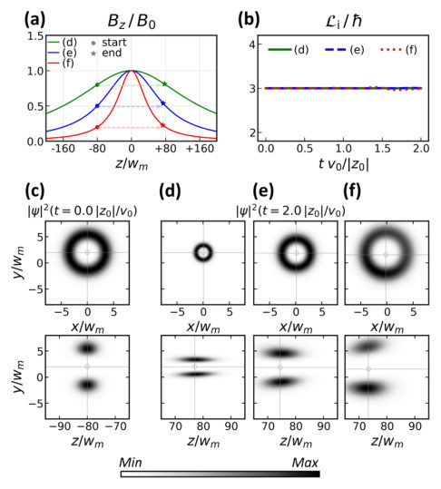
<figcaption class="paper-figure-caption"><b>Fig 2.</b> FIG. 2. Dynamics of an off-axis vortex-electron wavepacket in Glaser lenses with different characteristic lengths a. Panel (a) shows the longitudinal magnetic-field profiles Bz(z) for a = 160, 80, 40 wm, and panel (b) the evolution of the intrinsic canonical OAM Li. Panels (c–f) show the corresponding prob- ability density |ψ|2 at the initial time and at t = 2.0|z0|/v0. The initial wavepacket has topological charge ℓ= +3, char- acteristic scales w⊥= 2 wm and wz = 4 wm, centroid position r0 = (0, +2, −80) wm, and axial speed v0 = (160 wm)/(6Tc). Here B0 = 0.02 T, corresponding to wm = p</figcaption>
</figure>
<figure class="paper-figure-card">
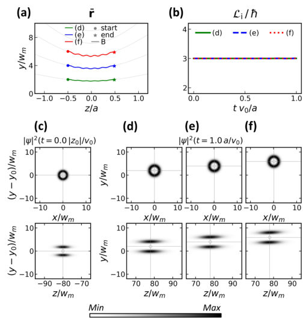
<figcaption class="paper-figure-caption"><b>Fig 3.</b> FIG. 3. Dynamics of an off-axis vortex-electron wavepacket for different initial transverse offsets y0. Panel (a) dis- plays the centroid trajectories ¯r in the z–y plane for y0 = +2, +4, +6 wm, while panel (b) shows the evolution of the in- trinsic canonical OAM Li. Panels (c–f) show the correspond- ing probability density |ψ|2 at the initial time and at t = a/v0. The initial wavepacket has topological charge ℓ= +3, char- acteristic scales w⊥= 1 wm and wz = 4 wm, centroid position r0 = (0, y0, −0.5 a), and axial speed v0 = a/(6Tc). The Glaser field is specified by a = 160 wm and B0 = 0.02 T, yielding the characteristic scales wm = 0.256 µm and Tc = 1.786 ns.</figcaption>
</figure>
</div>

<p><strong>Summary.</strong> This paper analyzes the conservation of intrinsic orbital angular momentum for electron vortices moving off-axis through magnetic lenses. The authors prove that this conservation is guaranteed by a hidden SU(1,1) dynamical invariant, even when simple symmetries are broken. This finding is confirmed via detailed theoretical derivations and robust 3D numerical simulations.</p>
<p><strong>Why it may be interesting.</strong> The discovery of a non-obvious dynamical symmetry (SU(1,1)) protecting a key quantum observable ($L_i$) in a complex physical setting like nonuniform fields is highly relevant for understanding topological robustness in wave propagation.</p>
<details>
<summary>Detailed structure</summary>
<p><strong>Main problem.</strong> The study investigates how the intrinsic orbital angular momentum (OAM) of off-axis electron vortices is conserved when propagating through nonuniform magnetic fields, contrasting this with on-axis cases protected by rotational symmetry.</p>
<p><strong>Main result.</strong> The intrinsic OAM is found to be robustly conserved due to a hidden SU(1,1) dynamical invariant, which is confirmed by both theoretical derivation in the paraxial limit and high-fidelity 3D numerical simulations.</p>
<p><strong>Method.</strong> The work combines analytical derivations using Hamiltonian mechanics (Heisenberg equations of motion) with advanced numerical techniques like operator-splitting Fourier pseudo-spectral methods to simulate wavepacket evolution.</p>
<p><strong>Model / system.</strong> The system models an electron vortex propagating in a magnetic field, specifically utilizing the Glaser lens profile $B(z) = B_0(1 + z^2/a^2)^{-1}$. The dynamics are governed by the time-dependent Schrödinger equation with a vector potential $\mathbf{A}$.</p>
<p><strong>Key observables.</strong> Intrinsic Orbital Angular Momentum ($L_i$), Extrinsic OAM ($L_{	ext{ext}}$), and the conserved SU(1,1) norm.</p>
<p><strong>Important parameters / regimes.</strong> Magnetic field variation scale ($a$), initial transverse offset ($y_0$), and topological charge ($\ell$).</p>
<p><strong>Assumptions / limitations.</strong> The theoretical proof relies on the paraxial approximation, although numerical results suggest robustness beyond this limit.</p>
<p><strong>Figures summary.</strong> Figures illustrate off-axis vortex propagation through a magnetic lens, showing centroid trajectories and confirming that $L_i$ remains nearly constant despite field gradients and initial offsets.</p>
<p><strong>Paper structure.</strong> The paper develops the Hamiltonian formalism for electron dynamics in nonuniform fields, derives equations of motion for expectation values (including $L_{	ext{ext}}$), identifies the hidden SU(1,1) invariant, and validates this conservation law through both analytical proofs and extensive 3D numerical simulations.</p>
</details>
<details>
<summary>Abstract</summary>
<p>Rotational symmetry protects the topological charge of on-axis electron vortices but not of off-axis vortices. We identify an additional SU(1,1) dynamical invariant that guarantees conservation of their intrinsic orbital angular momentum within the near-axis approximation. First-principles simulations of an off-axis electron vortex traversing a Glaser lens confirm this prediction, establishing a robust transport mechanism in axisymmetric nonuniform magnetic fields.</p>
</details>
<p><sub><a href="#top">↑ back to top</a></sub></p>

<p><a id="paper-2607.21811"></a></p>
<h3 id="efficient-unclonable-encryption-from-pauli-eigenstates"><a href="http://arxiv.org/abs/2607.21811v1">Efficient Unclonable Encryption from Pauli Eigenstates</a></h3>
<p><strong>Authors:</strong> Seyoon Ragavan<br>
<strong>Type:</strong> theory · <strong>Category:</strong> quantum information and computing · <strong>PDF:</strong> <a href="https://arxiv.org/pdf/2607.21811v1">https://arxiv.org/pdf/2607.21811v1</a><br>
<strong>Analysis basis:</strong> full PDF text, analyzed in chunks
<strong>Topic relevance:</strong> <code>entanglement &amp; information structure</code> <strong>1/5</strong></p>
<div class="figure-strip-hint">↔ Scroll figures horizontally</div>
<div class="paper-figures-scroll">
<figure class="paper-figure-card">
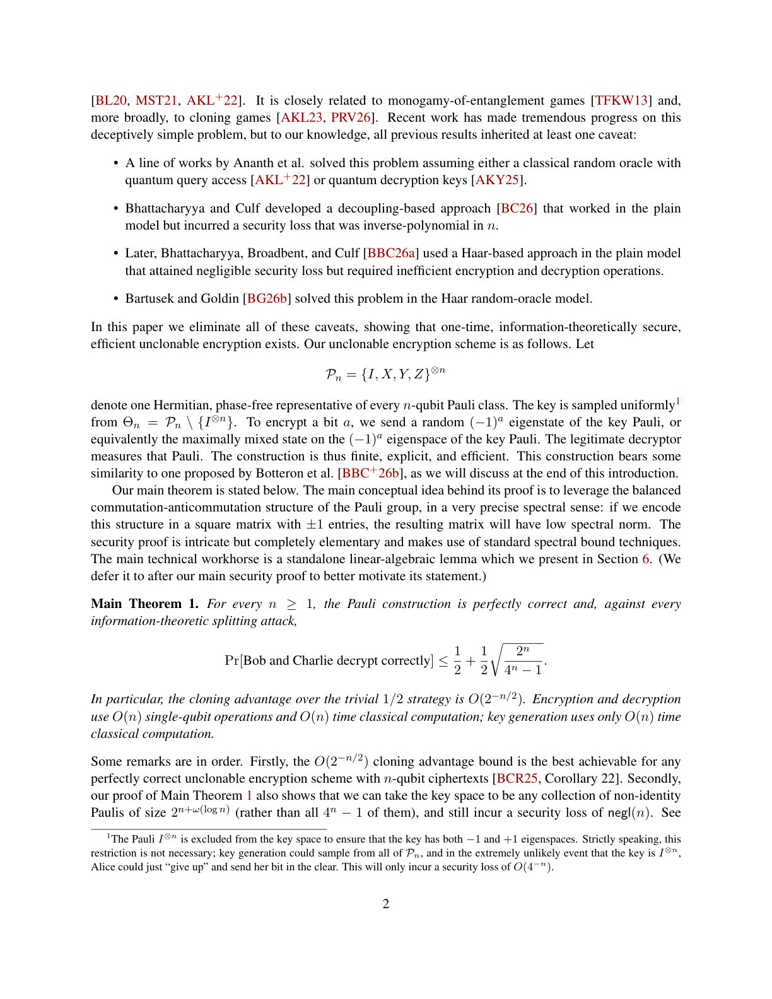
<figcaption class="paper-figure-caption"><b>Fig 1.</b> Low-resolution page preview, page 2</figcaption>
</figure>
<figure class="paper-figure-card">
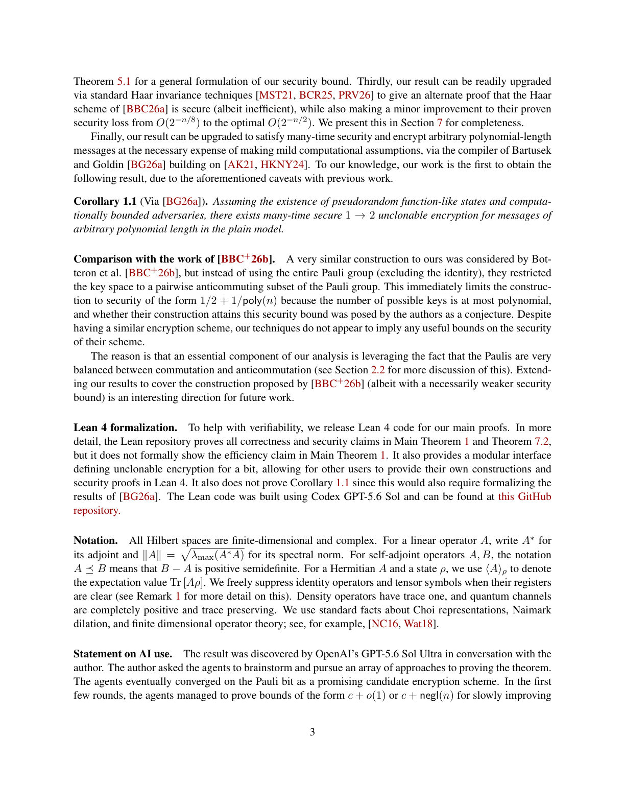
<figcaption class="paper-figure-caption"><b>Fig 2.</b> Low-resolution page preview, page 3</figcaption>
</figure>
<figure class="paper-figure-card">
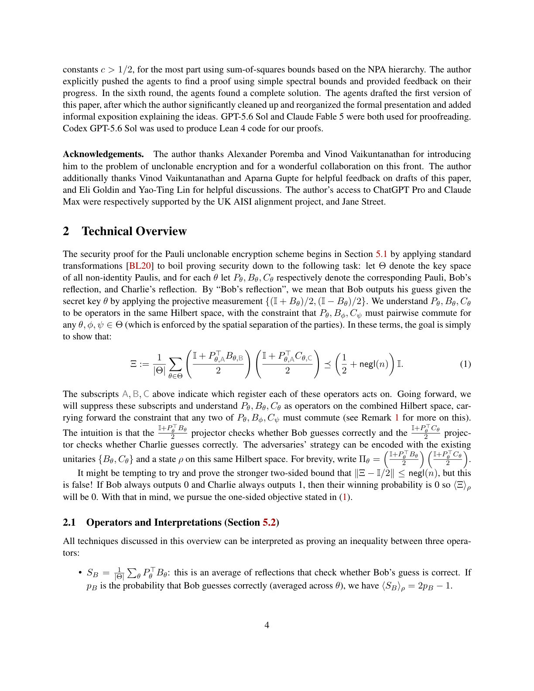
<figcaption class="paper-figure-caption"><b>Fig 3.</b> Low-resolution page preview, page 4</figcaption>
</figure>
<figure class="paper-figure-card">
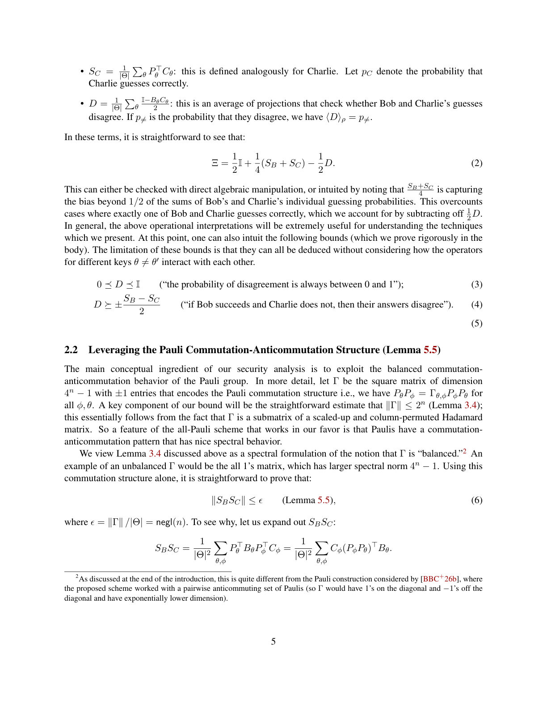
<figcaption class="paper-figure-caption"><b>Fig 4.</b> Low-resolution page preview, page 5</figcaption>
</figure>
<figure class="paper-figure-card">
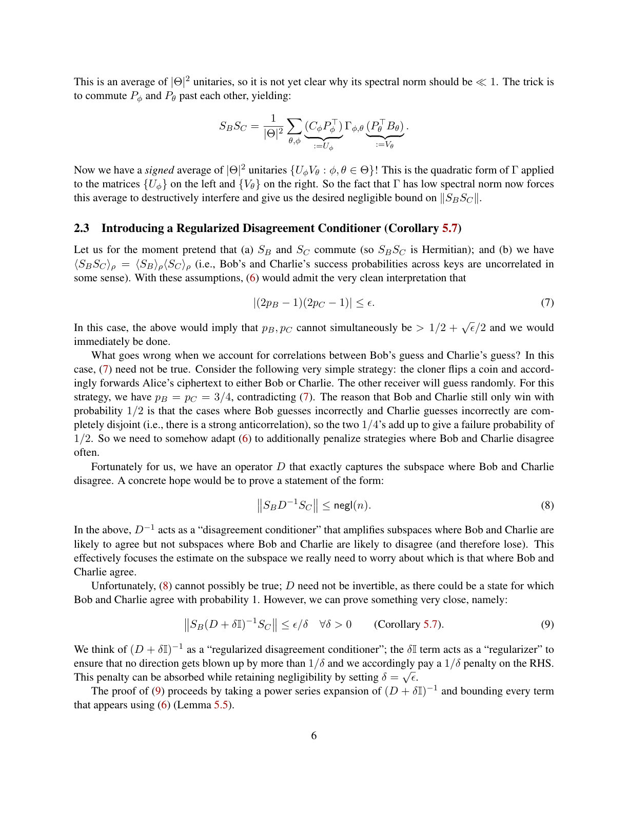
<figcaption class="paper-figure-caption"><b>Fig 5.</b> Low-resolution page preview, page 6</figcaption>
</figure>
</div>

<p><strong>Summary.</strong> This paper presents a novel, efficient, and information-theoretically secure Unclonable Encryption scheme using random Pauli operators on $n$ qubits. It achieves state-of-the-art security bounds by leveraging the algebraic structure of the Pauli group within its rigorous proof framework. This advances quantum cryptography by providing a practical primitive for device-independent security.</p>
<p><strong>Why it may be interesting.</strong> It provides a concrete, physically realizable quantum cryptographic primitive whose security proof is deeply rooted in the algebraic structure of Pauli operators, which are fundamental tools in characterizing quantum states.</p>
<details>
<summary>Detailed structure</summary>
<p><strong>Main problem.</strong> Developing an efficient, plain-model, one-time information-theoretically secure Unclonable Encryption (UE) scheme for a single classical bit.</p>
<p><strong>Main result.</strong> The Pauli construction achieves the best known security bound against information-theoretic splitting attacks for $n$-qubit ciphertexts, providing efficiency and security previously lacking in related schemes.</p>
<p><strong>Method.</strong> The security proof relies on analyzing expectation values involving operators derived from the Pauli group structure, utilizing advanced spectral bound techniques and linear algebra to bound cloning success probabilities.</p>
<p><strong>Model / system.</strong> The system is based on quantum information theory using the Pauli group ($\mathcal{P}_n$) acting on $n$ qubits. The key is a random non-identity phase-free Pauli operator $    heta$.</p>
<p><strong>Key observables.</strong> The probability that both separated receivers correctly recover the bit, and expectation values involving operators like $\Xi$, $S_B$, $S_C$, and $D$.</p>
<p><strong>Important parameters / regimes.</strong> The number of qubits ($n$), which dictates the exponential security scaling ($  ext{negl}(n) \sim O(2^{-n/2})$).</p>
<p><strong>Assumptions / limitations.</strong> Assumes the existence of pseudorandom function-like states for message extension; the core proof relies on complex spectral analysis techniques.</p>
<p><strong>Paper structure.</strong> The paper introduces the Pauli construction, proves its security by bounding expectation values related to information leakage (Chunks 2 &amp; 3), and discusses extensions and comparisons with prior work (Chunk 1).</p>
</details>
<details>
<summary>Abstract</summary>
<p>We give, to our knowledge, the first plain-model, one-time information-theoretically secure, efficient unclonable encryption scheme for one classical bit. Previous work by Bhattacharyya and Culf (Nature Physics, 2026) and Bhattacharyya, Broadbent, and Culf either only showed $1/\mathsf{poly}(λ)$ security loss or required inefficient encryption/decryption operations. We avoid both of these caveats; in doing so, we obtain (to our knowledge) the first plain-model construction of many-time secure $1 \to 2$ unclonable encryption for arbitrary polynomial-length messages, assuming the existence of pseudorandom function-like states (Bartusek and Goldin).   The key is a uniformly random non-identity phase-free Pauli on $n$ qubits, and bit $a$ is encrypted as a random $(-1)^a$ eigenstate of that Pauli. The scheme is exponentially secure; we prove that the probability that both receivers recover the bit is at most $\frac{1}{2}+\frac{1}{2}\sqrt{{2^n}/({4^n-1})} = \frac{1}{2} + O\left(2^{-n/2}\right).$ By a lower bound due to Broadbent, Culf, and Rochette, this is the best probability bound achievable with $n$-qubit ciphertexts (up to the constant hidden in the $O(\cdot)$).   The main conceptual idea is to leverage, in a precise spectral sense, the balanced commutation-anticommutation structure of the Pauli group. The proof is intricate but completely elementary and makes use of standard spectral bound techniques. The main technical workhorse is a standalone linear-algebraic lemma that informally relates the positivity of two different operators, each capturing the intuition that if the two receivers can individually decrypt unusually often then they must also disagree often.   GPT-5.6 Sol Ultra found this proof in an extended conversation with the author and drafted a preliminary version of this paper. The author is fully accountable for the correctness of this paper.</p>
</details>
<p><sub><a href="#top">↑ back to top</a></sub></p>

<p><a id="paper-2607.22488"></a></p>
<h3 id="exactness-of-symmetry-broken-self-interaction-correction-in-the-strongly-correlated-or-classical-limit-harmonium-as-a-demonstration"><a href="http://arxiv.org/abs/2607.22488v1">Exactness of Symmetry-Broken Self-Interaction Correction in the Strongly-Correlated or Classical Limit: Harmonium as a Demonstration</a></h3>
<p><strong>Authors:</strong> Cody Woods, Yunzhi Li, Wenqing Yao, Chen Li, John Perdew<br>
<strong>Type:</strong> theory · <strong>Category:</strong> strongly correlated electrons · <strong>PDF:</strong> <a href="https://arxiv.org/pdf/2607.22488v1">https://arxiv.org/pdf/2607.22488v1</a><br>
<strong>Analysis basis:</strong> full PDF text, analyzed in chunks
<strong>Topic relevance:</strong> <code>Keldysh / 2PI / non-Gaussian methods</code> <strong>1/5</strong></p>
<div class="figure-strip-hint">↔ Scroll figures horizontally</div>
<div class="paper-figures-scroll">
<figure class="paper-figure-card">
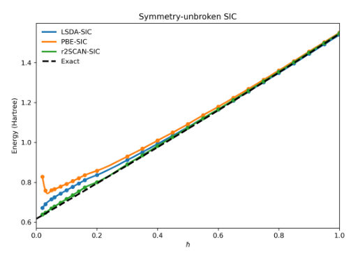
<figcaption class="paper-figure-caption"><b>Fig 1.</b> FIG. 2. Total energy vs. ℏfor LSDA, PBE, r2SCAN SIC variants. The plot highlights the range to 0 ≤ℏ≤1; The black dashed line is the exact energy of Eq. (8).(Symmetry unbroken)</figcaption>
</figure>
<figure class="paper-figure-card">
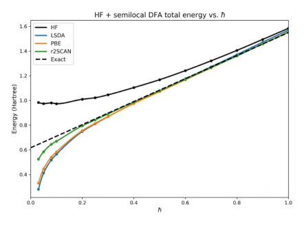
<figcaption class="paper-figure-caption"><b>Fig 2.</b> FIG. 1. E vs ℏfor Harmonium model without SIC correc- tion. Verifying Calculation from Truncated Solution [10]. The black dashed line is the exact energy of Eq. (8).</figcaption>
</figure>
<figure class="paper-figure-card">
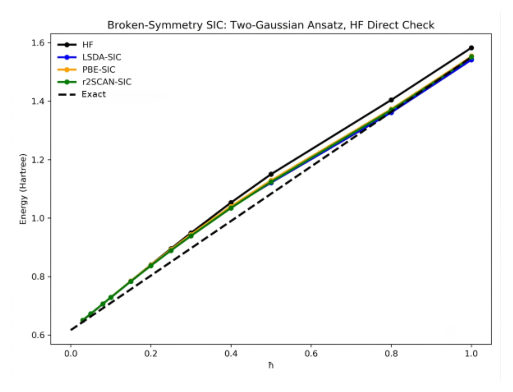
<figcaption class="paper-figure-caption"><b>Fig 3.</b> FIG. 3. Implementation of SIC correction (symmetry bro- ken). The visible errors could arise from the restricted Gaus- sian form of the SIC orbitals of Eqs. (10) and (11). The black dashed line is the exact energy of Eq. (8).</figcaption>
</figure>
<figure class="paper-figure-card">
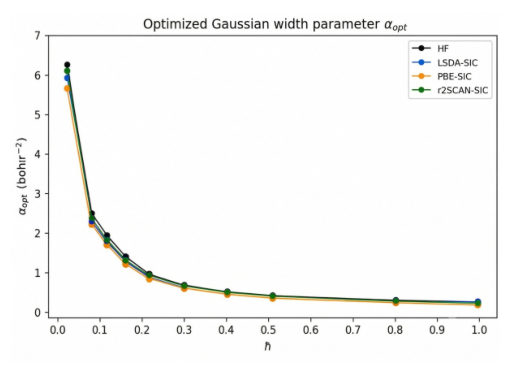
<figcaption class="paper-figure-caption"><b>Fig 4.</b> FIG. 4. Variationally-optimized Gaussian exponent parame- ter with symmetry-broken SIC. Since the Gaussian density is proportional to e−αr2, increasing αopt corresponds to increas- ing orbital localization(decreasing orbital width).</figcaption>
</figure>
<figure class="paper-figure-card">
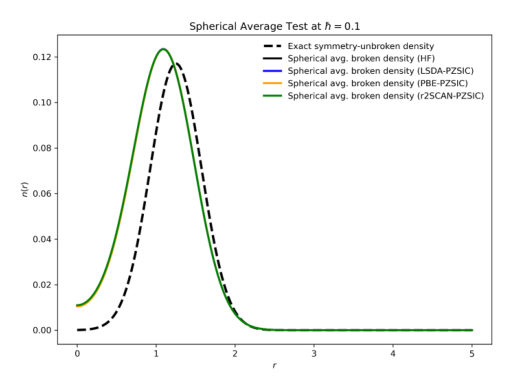
<figcaption class="paper-figure-caption"><b>Fig 5.</b> FIG. 6. Spherical average test at ℏ= 0.1. DFA Densities overlap. The small difference probably arises from the re- stricted Gaussian form of the SIC orbital of Eqs. (10) and (11).</figcaption>
</figure>
</div>

<p><strong>Summary.</strong> This work investigates how well Self-Interaction Correction methods describe strongly correlated electron systems by modeling two electrons in a harmonic trap (harmonium). The authors prove that the symmetry-broken SIC approach yields exact results in the classical limit ($\hbar 	o 0$). This demonstrates SIC's utility for bridging the gap between standard quantum DFT and purely classical descriptions.</p>
<p><strong>Why it may be interesting.</strong> While focused on electronic structure theory, the concept of approaching a classical limit from quantum mechanics using specialized corrections (SIC) is relevant for understanding semiclassical approximations in many-body systems.</p>
<details>
<summary>Detailed structure</summary>
<p><strong>Main problem.</strong> The study addresses strong electron correlation, a major challenge for Density Functional Theory (DFT), by examining the exactness of symmetry-broken Self-Interaction Correction (SIC) in the semiclassical or classical limit.</p>
<p><strong>Main result.</strong> The authors demonstrate that for the harmonium model, symmetry-broken SIC yields results exact in the $\hbar 	o 0$ limit and highly accurate across all intermediate values of Planck's constant ($\hbar$).</p>
<p><strong>Method.</strong> The research employs a variational approach using localized Gaussian orbitals within the framework of PZ-SIC to calculate ground-state energies for the two-electron harmonium system.</p>
<p><strong>Model / system.</strong> The model is the harmonium: two Coulomb-interacting electrons confined by a spherically-symmetric harmonic-oscillator potential. The Hamiltonian includes tunable Planck's constant ($\hbar$) and confinement strength ($\omega$).</p>
<p><strong>Key observables.</strong> Ground-state energy ($E$), ground-state density ($
ho(r)$), optimized localization distance ($R_{opt}$), and Gaussian exponent ($\alpha_{opt}$).</p>
<p><strong>Important parameters / regimes.</strong> Planck's constant ($\hbar$), harmonic confinement strength ($\omega$), and the electron-electron interaction strength (Coulomb repulsion).</p>
<p><strong>Assumptions / limitations.</strong> The primary assumption is that symmetry-broken SIC correctly captures the physics in the strongly correlated limit, although limitations exist due to the restricted variational ansatz.</p>
<p><strong>Figures summary.</strong> Figures illustrate the total energy vs. $\hbar$ for various DFAs (showing DFA failure near $\hbar 	o 0$), and show how optimized parameters ($R_{opt}, \alpha_{opt}$) converge towards classical values as $\hbar$ decreases.</p>
<p><strong>Paper structure.</strong> The paper progresses by establishing the physical problem in the harmonium model, comparing standard DFT failures in the semiclassical limit, introducing and applying symmetry-broken SIC via a variational ansatz, and finally demonstrating convergence to the known exact classical limit ($\hbar 	o 0$).</p>
</details>
<details>
<summary>Abstract</summary>
<p>Strong electron correlation is an important challenge to both wavefunction and density functional theory. It has been argued that the Perdew-Zunger 1981 self-interaction correction to any density functional approximation, after symmetry breaking, can correctly describe the ground-state energy in the strongly-correlated limit in which each electron is described by a highly-localized and non-overlapped one-electron spin orbital. It has also been argued that the classical limit, in which Planck's constant tends to zero, is the strongly-correlated limit of quantum mechanics, where standard density functionals fail badly, as demonstrated by the exactly-solvable problem of harmonium (two Coulomb-interacting electrons bound by a spherically-symmetric harmonic-oscillator external potential). Here we combine these two ideas and demonstrate that, for harmonium, symmetry-broken self-interaction correction is exact in the limit where Planck's constant tends to zero, and usefully accurate for all values between 0 and the physical value (1 in atomic units). We also show that the Planck-constant-dependent symmetric ground-state density can be restored by spherical averaging of the broken-symmetry density.</p>
</details>
<p><sub><a href="#top">↑ back to top</a></sub></p>

<p><a id="paper-2607.21808"></a></p>
<h3 id="observation-of-room-temperature-intrinsic-nonlinear-thermoelectric-effects-in-low-dimensional-semimetals"><a href="http://arxiv.org/abs/2607.21808v1">Observation of room temperature intrinsic nonlinear thermoelectric effects in low-dimensional semimetals</a></h3>
<p><strong>Authors:</strong> Kurea Nakagawa, Krishnaraajan Sundararajan, Cédric A. Cordero-Silis, Bart J. van Wees, Marcos H. D. Guimarães<br>
<strong>Type:</strong> experiment · <strong>Category:</strong> other · <strong>PDF:</strong> <a href="https://arxiv.org/pdf/2607.21808v1">https://arxiv.org/pdf/2607.21808v1</a><br>
<strong>Analysis basis:</strong> full PDF text, analyzed in chunks
<strong>Topic relevance:</strong> <code>non-equilibrium dynamics</code> <strong>1/5</strong></p>
<div class="figure-strip-hint">↔ Scroll figures horizontally</div>
<div class="paper-figures-scroll">
<figure class="paper-figure-card">
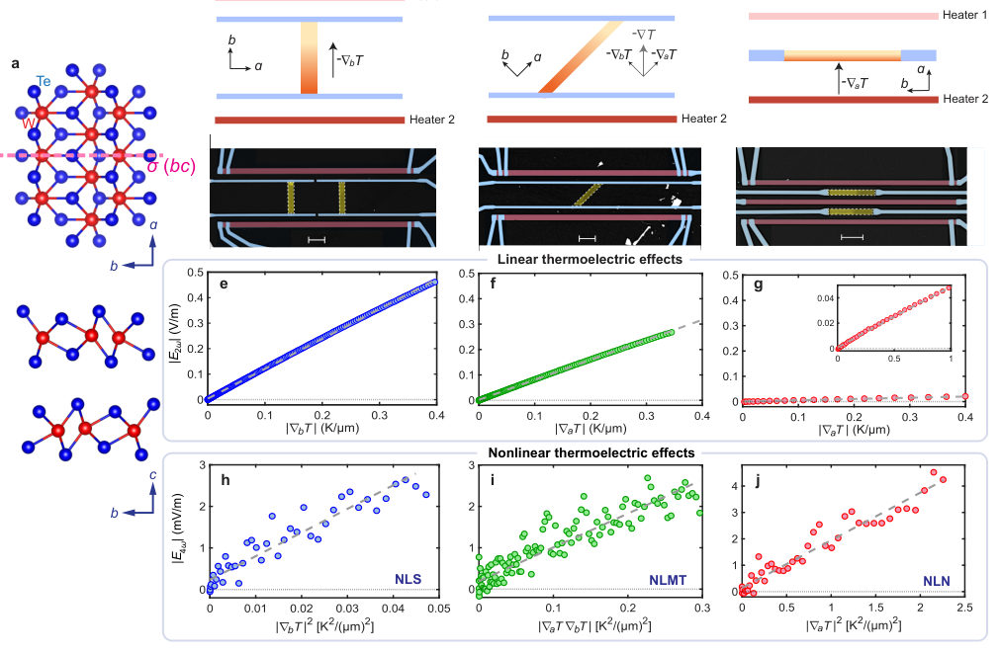
<figcaption class="paper-figure-caption"><b>Fig 1.</b> FIG. 1. Linear/nonlinear thermoelectric responses in WTe2 a, Crystal structure of Td-WTe2, with the mirror plane [σ(bc)] indicated by the pink dashed line. b-d, Schematic illustrations (top) and corresponding false-coloured scanning electron microscopy (SEM) images (bottom) of the devices designed to measure the NLS (b), NLMT (c), and NLN (d) effects. In the SEM images, WTe2, Pt heaters, and Au contacts are shown in yellow, red, and light blue, respectively (Scale bar: 10 µm). e–g, Second-harmonic thermoelectric responses at T = 35 K, plotted as a function of the applied temperature gradient for the three devices shown in b–d, respectively. The axis scales are unified across all panels,...</figcaption>
</figure>
<figure class="paper-figure-card">
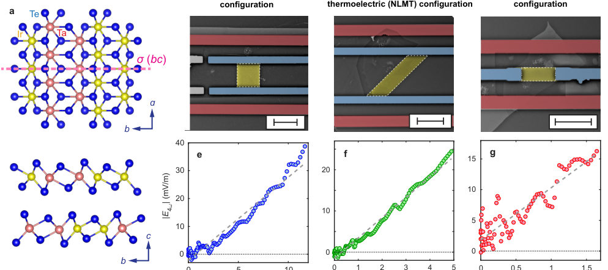
<figcaption class="paper-figure-caption"><b>Fig 2.</b> FIG. 2. Nonlinear thermoelectric responses in TaIrTe4 at room temperature a, Crystal structure of TaIrTe4, with the mirror plane [σ(bc)] indicated by the pink dashed line. b-d, False-coloured SEM images of the devices designed to measure the NLS (b), NLMT (c), and NLN (d) effects. In the SEM images, TaIrTe4, Pt heaters, and Au contacts are shown in yellow, red, and light blue, respectively (Scale bar: 5 µm). e–g, Fourth-harmonic thermoelectric responses at room temperature (T = 292.5 K), plotted as a function of the square of the applied temperature gradient for the same devices. The data are symmetrized with respect to temperature-gradient reversal to isolate intrinsic nonlinear...</figcaption>
</figure>
<figure class="paper-figure-card">
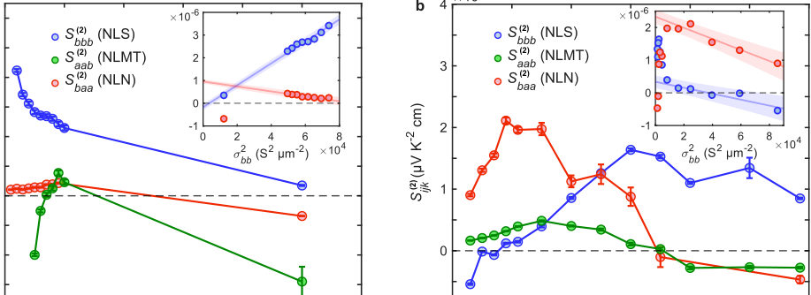
<figcaption class="paper-figure-caption"><b>Fig 3.</b> FIG. 3. Nonlinear thermoelectric coefficients in WTe2 and TaIrTe4 a-b, Temperature dependence of the nonlinear thermoelectric coefficients: NLS [S(2) bbb], NLN [S(2) baa], NLMT [S(2) aab] in WTe2 (a) and TaIrTe4 (b). The insets show the NLS and NLN coefficients as functions of the square of the electrical conductivity along b-axis; σbb. Linear fits to the data below 55 K are shown, with the shaded regions representing the standard deviation of the fits.</figcaption>
</figure>
</div>

<p><strong>Summary.</strong> This work reports the first observation of intrinsic nonlinear thermoelectric effects—including NLS, NLN, and NLMT—at room temperature in low-symmetry Weyl semimetals. By employing harmonic detection techniques, the authors successfully isolated these higher-order responses, demonstrating that they arise fundamentally from reduced crystal symmetry rather than external magnetic fields.</p>
<p><strong>Why it may be interesting.</strong> While focused on solid-state transport, the ability to engineer higher-order energy conversion mechanisms via symmetry control is relevant for understanding non-equilibrium quantum dynamics in mesoscopic systems.</p>
<details>
<summary>Detailed structure</summary>
<p><strong>Main problem.</strong> The study aims to demonstrate and characterize intrinsic nonlinear thermoelectric effects at room temperature in low-dimensional semimetals, moving beyond reliance on external symmetry breaking.</p>
<p><strong>Main result.</strong> All three symmetry-allowed components of the nonlinear thermoelectric tensor (NLS, NLN, NLMT) were observed intrinsically up to room temperature in $  ext{WTe}_2$ and $   ext{TaIrTe}_4$.</p>
<p><strong>Method.</strong> Measurements utilized harmonic detection ($4\omega$) techniques on fabricated devices with specific geometries to isolate intrinsic nonlinear contributions from linear response terms.</p>
<p><strong>Model / system.</strong> The physical systems are low-symmetry type-II Weyl semimetals ($    ext{WTe}_2$ and $   ext{TaIrTe}_4}$). The analysis uses a third-rank tensor formalism ($\mathbf{S}^{(2)}$) to describe the nonlinear thermoelectric response.</p>
<p><strong>Key observables.</strong> Nonlinear Seebeck (NLS), Nonlinear Nernst (NLN), and Nonlinear Mixed-directional thermoelectric (NLMT) coefficients, measured as fourth-harmonic voltage responses ($E_{i, 4\omega}$).</p>
<p><strong>Important parameters / regimes.</strong> Room temperature ($\sim 290 	ext{K}$); zero magnetic field; low-dimensional semimetals.</p>
<p><strong>Assumptions / limitations.</strong> The intrinsic nonlinear contribution is isolated by exploiting the directional nature of linear effects through symmetrization and ruling out temperature dependence of heater resistance.</p>
<p><strong>Figures summary.</strong> Figures show device schematics, measured fourth-harmonic responses for NLS/NLMT/NLN in $   ext{TaIrTe}_4$, and the temperature dependence of these nonlinear coefficients in both materials.</p>
<p><strong>Paper structure.</strong> The paper establishes the theoretical framework using second-order tensors for linear response and third-rank tensors for nonlinear effects. It details experimental measurements using harmonic detection to isolate intrinsic contributions, followed by analysis showing the origin (Berry curvature vs. scattering) and temperature dependence of these novel thermoelectric responses.</p>
</details>
<details>
<summary>Abstract</summary>
<p>Nonreciprocal control of thermoelectric responses offers a promising strategy for next-generation thermal-management and energy-conversion. While nonlinear electrical transport has recently emerged as an intrinsic property of low-symmetry quantum materials, their thermoelectric counterparts have not been demonstrated. Here, exploiting harmonic detection with gradient-reversal techniques, we report intrinsic nonlinear thermoelectric responses up to room temperature in the low-symmetry type-II Weyl semimetals $T_\mathrm{d}$-WTe$_2$ and TaIrTe$_4$ in the absence of magnetic fields or magnetic materials. We resolve all symmetry-allowed components of the second-order thermoelectric tensor, including the nonlinear Seebeck, nonlinear Nernst, and nonlinear mixed-directional thermoelectric effects and demonstrate that both Berry-curvature-related and scattering-induced contributions govern the different nonlinear thermoelectric responses. Our results show that nonlinear thermoelectricity arises intrinsically from reduced crystal symmetry and that engineering effects related to scattering in these materials provides a versatile platform for exploring higher-order heat-to-charge current conversion beyond the linear response.</p>
</details>
<p><sub><a href="#top">↑ back to top</a></sub></p>
<h2 id="other-papers-8">Other papers (8)</h2>
<p><em>Papers from primary archives without highlighted authors or any topic match. Click to expand.</em></p>
<details>
<summary>Show other papers</summary>

<p><a id="paper-2607.22460"></a></p>
<h3 id="algebraic-structure-of-tiger-codes"><a href="http://arxiv.org/abs/2607.22460v1">Algebraic structure of Tiger codes</a></h3>
<p><strong>Authors:</strong> Clément Poirson, Anthony Leverrier, Christophe Vuillot<br>
<strong>Type:</strong> theory · <strong>Category:</strong> quantum information and computing · <strong>PDF:</strong> <a href="https://arxiv.org/pdf/2607.22460v1">https://arxiv.org/pdf/2607.22460v1</a><br>
<strong>Analysis basis:</strong> full PDF text, analyzed in chunks</p>
<div class="figure-strip-hint">↔ Scroll figures horizontally</div>
<div class="paper-figures-scroll">
<figure class="paper-figure-card">
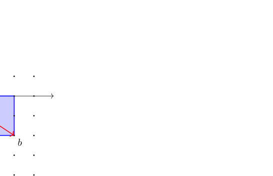
<figcaption class="paper-figure-caption"><b>Fig 1.</b> Figure 2: Graphical representation of the partial order in Definition 10: Let b = 3 −2⊤∈Z2. The blue shaded area represents all the vectors of Z2 less than or equal to b.</figcaption>
</figure>
</div>
<p><strong>Summary.</strong> This paper rigorously develops the theory of Tiger codes, which are advanced multimode bosonic quantum error-correcting codes. It uses sophisticated algebraic tools to prove the code structure is mathematically sound, deriving an explicit basis and characterizing its logical degrees of freedom via homology. Crucially, it provides methods to implement non-Clifford gates necessary for universal quantum computation within this bosonic encoding framework.</p>
<p><strong>Why it may be interesting.</strong> This work provides a deep mathematical underpinning for bosonic quantum error correction, moving beyond simple stabilizer models by incorporating complex algebraic structures and characterizing universal gate sets necessary for fault-tolerant computation in superconducting circuits or cavity QED systems.</p>
<details>
<summary>Detailed structure</summary>
<p><strong>Main problem.</strong> To provide a rigorous algebraic treatment of Tiger codes, which are multimode bosonic quantum error-correcting codes unifying several known constructions.</p>
<p><strong>Main result.</strong> The paper establishes that the code structure is governed by the homology of an underlying chain complex and develops criteria for implementing non-Clifford logical gates using polynomial phase rotations. This confirms Tiger codes as a robust framework for bosonic encoding.</p>
<p><strong>Method.</strong> The authors employ algebraic techniques, including kernel definitions, Fourier transforms over the codespace, and analysis via homological algebra to characterize the code space and its logical operations.</p>
<p><strong>Model / system.</strong> The system involves multimode bosonic quantum states (Fock states) protected by constraints derived from both annihilation-type ($\hat{a}$-type) and number-type ($\hat{n}$-type) operators. These codes generalize concepts from stabilizer codes to bosonic systems.</p>
<p><strong>Key observables.</strong> Logical Pauli operators, the structure of the homology group ($Z^{d_1} 	imes \cdots$), and the required polynomial form $P(\hat{\mathbf{n}})$ for gate implementation.</p>
<p><strong>Important parameters / regimes.</strong> The constraints are defined by integer matrices ($G$ and $H$) and associated parameters ($\alpha, \Delta$). The complexity is related to the degree of polynomials used in gates.</p>
<p><strong>Assumptions / limitations.</strong> The analysis relies on extending definitions from linear constraints to non-linear number constraints. A key algebraic result involves decomposing preserving polynomials into univariate components under certain assumptions.</p>
<p><strong>Figures summary.</strong> Not specified, but the notes reference structural relationships derived from matrix decompositions (e.g., $L_f = H$) and specific code examples like the cat or paircat codes.</p>
<p><strong>Paper structure.</strong> The paper progresses by first defining the rigorous algebraic structure of Tiger codes using kernel definitions; it then develops tools like Fourier transforms to find dual bases; subsequently, it extends the framework to non-linear constraints; finally, it characterizes the implementation of logical operations, especially non-Clifford gates.</p>
</details>
<details>
<summary>Abstract</summary>
<p>Tiger codes form a family of multimode bosonic quantum codes that unify several previously known constructions, including cat, paircat, and the two-mode binomial code. In this work, we give a rigorous algebraic treatment of these codes. Starting from a kernel definition of the codespace, we prove that the annihilation-type constraints admit a finite generating set, construct an explicit orthonormal basis, and show that the logical structure of the code is governed by the homology of an underlying chain complex, as expected in the original work on Tiger codes of Xu et al. We then develop a Fourier transform over the codespace to prove that the span of phase-rotated projected coherent states is dense therein, and to yield dual $X$- and $Z$-type descriptions of the code. We further extend the framework to non-linear number constraints, encompassing codes such as the four-legged cat or the repetition cat code. Finally, we investigate the implementation of logical operations. We first generalise the construction of logical Pauli operators proposed by Xu et al. to arbitrary logical spaces, and then construct non-Clifford gates using physical polynomial phase rotations of the form $e^{iP(\hat{\boldsymbol{n}})}$. We derive criteria on the real polynomial $P$ which, for positive single-logical-qubit Tiger codes satisfying an additional sign assumption, such as the paircat code, characterise the polynomials $P$ that preserve the codespace by decomposing them into a family of univariate polynomials. Through this decomposition, we relate the degrees of the resulting components to the induced logical action in the Clifford hierarchy. These results establish Tiger codes as a mathematically robust framework for describing a broad class of bosonic encodings.</p>
</details>
<p><sub><a href="#top">↑ back to top</a></sub></p>

<p><a id="paper-2607.21724"></a></p>
<h3 id="how-to-calculate-the-wigner-angle"><a href="http://arxiv.org/abs/2607.21724v1">How to calculate the Wigner angle</a></h3>
<p><strong>Authors:</strong> C. J. McKinstrie, M. V. Kozlov<br>
<strong>Type:</strong> theory · <strong>Category:</strong> other · <strong>PDF:</strong> <a href="https://arxiv.org/pdf/2607.21724v1">https://arxiv.org/pdf/2607.21724v1</a><br>
<strong>Analysis basis:</strong> full PDF text, analyzed in chunks</p>
<div class="figure-strip-hint">↔ Scroll figures horizontally</div>
<div class="paper-figures-scroll">
<figure class="paper-figure-card">
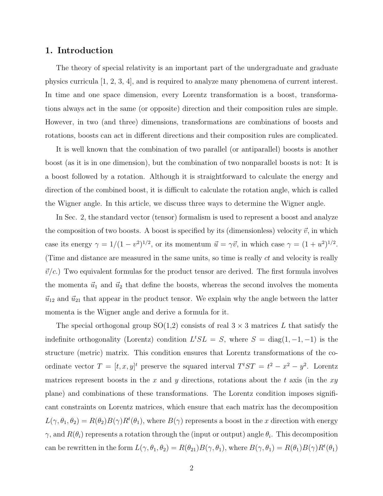
<figcaption class="paper-figure-caption"><b>Fig 1.</b> Low-resolution page preview, page 2</figcaption>
</figure>
<figure class="paper-figure-card">
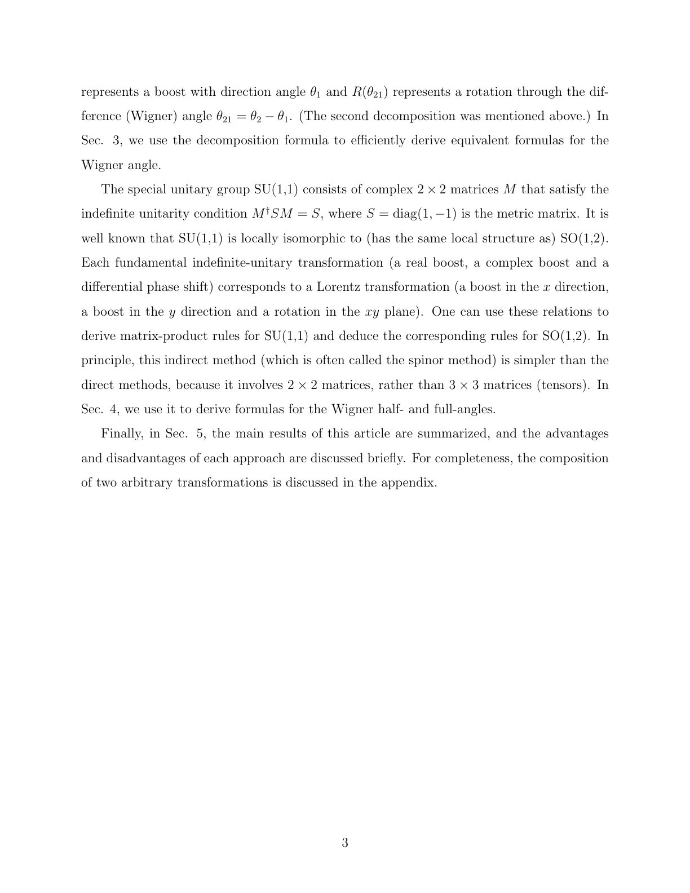
<figcaption class="paper-figure-caption"><b>Fig 2.</b> Low-resolution page preview, page 3</figcaption>
</figure>
<figure class="paper-figure-card">
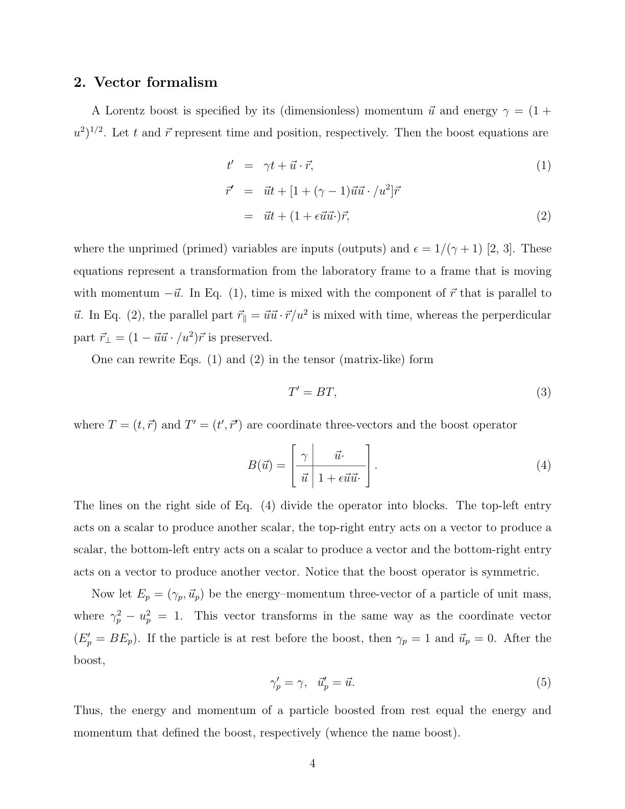
<figcaption class="paper-figure-caption"><b>Fig 3.</b> Low-resolution page preview, page 4</figcaption>
</figure>
<figure class="paper-figure-card">
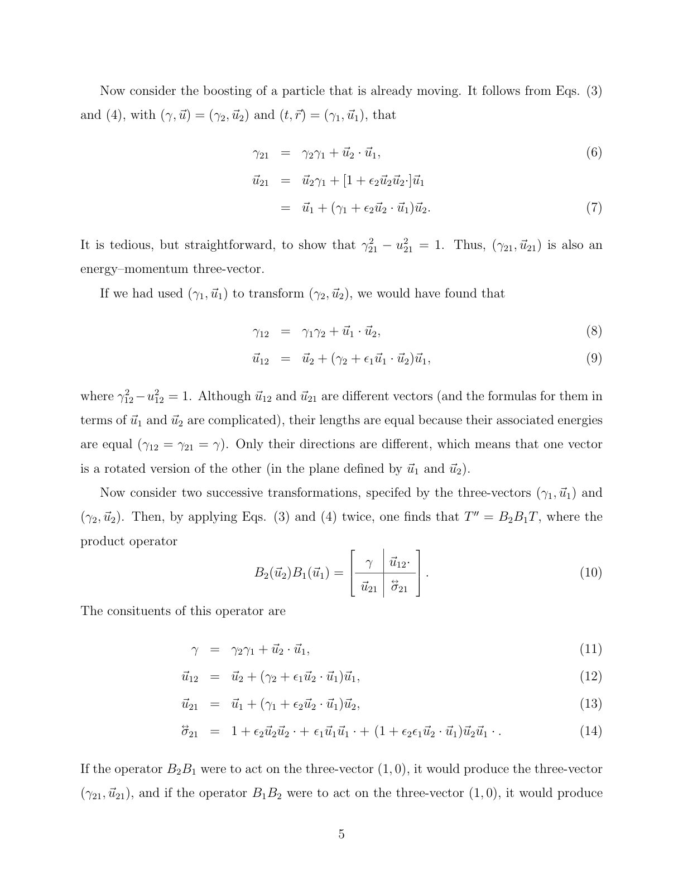
<figcaption class="paper-figure-caption"><b>Fig 4.</b> Low-resolution page preview, page 5</figcaption>
</figure>
<figure class="paper-figure-card">
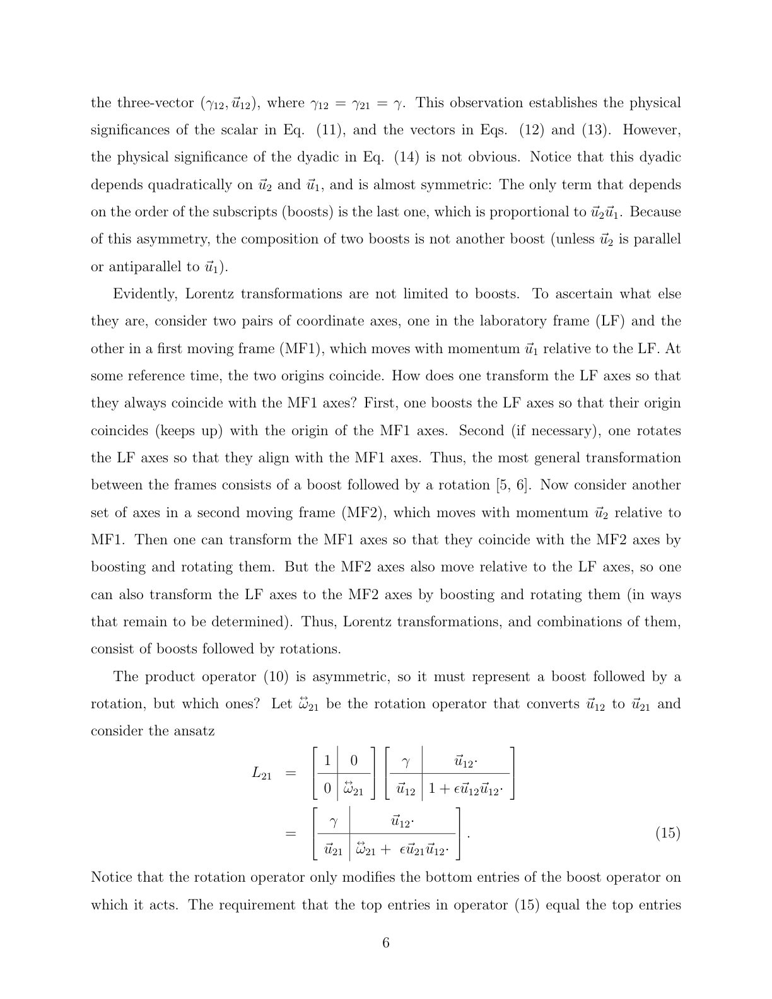
<figcaption class="paper-figure-caption"><b>Fig 5.</b> Low-resolution page preview, page 6</figcaption>
</figure>
</div>
<p><strong>Summary.</strong> This paper tackles the complex problem of calculating the Wigner angle, defined as the rotation angle resulting from combining two Lorentz boosts in 2+1 dimensions. It achieves this by reviewing and demonstrating the mathematical equivalence of formulas derived using vector, matrix, and spinor formalisms. The work confirms that such a composition is not simply another boost but rather a combination of a boost followed by a rotation.</p>
<p><strong>Why it may be interesting.</strong> While not directly about quantum information or AMO systems, the rigorous treatment of Lorentz transformations and their composition rules provides a deep theoretical understanding of how sequential physical boosts combine in spacetime geometry, which has analogues in relativistic quantum field theory.</p>
<details>
<summary>Detailed structure</summary>
<p><strong>Main problem.</strong> The primary goal is calculating the Wigner angle, which represents the rotation angle resulting from the composition of two nonparallel Lorentz boosts in 2+1 dimensions.</p>
<p><strong>Main result.</strong> The paper derives equivalent formulas for the Wigner angle using vector, matrix, and spinor formalisms, confirming that the product of two boosts results in a boost followed by a rotation.</p>
<p><strong>Method.</strong> It reviews and compares multiple mathematical derivations—including vector algebra, Lorentz matrix decomposition ($SO(1,2)$), and indefinite unitary group analysis ($    ext{SU}(1,1)$)—to determine the angle.</p>
<p><strong>Model / system.</strong> The system analyzed is special relativity in 2+1 dimensions, focusing on Lorentz transformations involving combinations of boosts and rotations. The mathematical tools include boost operators $B(\vec{u})$ and associated transformation matrices.</p>
<p><strong>Key observables.</strong> Wigner angle ($    heta_{21}$ or $ heta_w$), composite energy ($\gamma_{21}$), and the rotation dyadic ($\leftrightarrow\sigma_{21}$).</p>
<p><strong>Important parameters / regimes.</strong> Boost parameters (velocity $\vec{u}$, energy $\gamma$) and transformation angles ($    heta_1,     heta_2$).</p>
<p><strong>Assumptions / limitations.</strong> The composition of two boosts is assumed to decompose into a boost followed by a rotation; equivalence between different mathematical formalisms (vector vs. spinor) is asserted.</p>
<p><strong>Figures summary.</strong> Not specified in the notes, but derivations involve equations for product operators, trigonometric relations for $\sin(	heta_w)$ and $\cos(	heta_w)$, and matrix decompositions.</p>
<p><strong>Paper structure.</strong> The paper proceeds by reviewing vector, matrix, and spinor derivations sequentially. It establishes the general structure of the combined transformation ($B_2 B_1 	o 	ext{Boost} 	imes 	ext{Rotation}$) before deriving explicit formulas for the Wigner angle using various mathematical frameworks.</p>
</details>
<details>
<summary>Abstract</summary>
<p>Lorentz transformations in time and two space dimensions consist of boosts and rotations, and combinations thereof. In general, the combination of two boosts is not another boost: It is a boost followed by a rotation. The rotation angle is called the Wigner angle. Although it is straightforward to determine the energy and direction of the combined boost, it is difficult to determine the Wigner angle. In this article, the vector, matrix and spinor derivations of formulas for the Wigner angle are reviewed, and the underlying mathematics and physics are discussed briefly. Although the derivations are different, the results they produce are equivalent, as they should be. Like many physics problems, if one looks at the problem in the right way, it is not difficult to solve.</p>
</details>
<p><sub><a href="#top">↑ back to top</a></sub></p>

<p><a id="paper-2607.22468"></a></p>
<h3 id="learning-to-prepare-molecular-ground-states-with-transformer-models"><a href="http://arxiv.org/abs/2607.22468v1">Learning to Prepare Molecular Ground States with Transformer Models</a></h3>
<p><strong>Authors:</strong> Alex Koziell-Pipe, Jasmine Brewer, Jem Guhit, Marwa H. Farag, Kripa Panchagnula, Gabriel Laude, Fabian Finger, Carlo Gaggioli, Ludmila Szulakowska, Oliver J. Backhouse, Christos Papalitsas, Jason G. Mustakis, Thomas Soini, David Munoz Ramo, Stephen Clark, Elica Kyoseva, Enrico Rinaldi<br>
<strong>Type:</strong> both · <strong>Category:</strong> quantum information and computing · <strong>PDF:</strong> <a href="https://arxiv.org/pdf/2607.22468v1">https://arxiv.org/pdf/2607.22468v1</a><br>
<strong>Analysis basis:</strong> full PDF text, analyzed in chunks</p>
<div class="figure-strip-hint">↔ Scroll figures horizontally</div>
<div class="paper-figures-scroll">
<figure class="paper-figure-card">
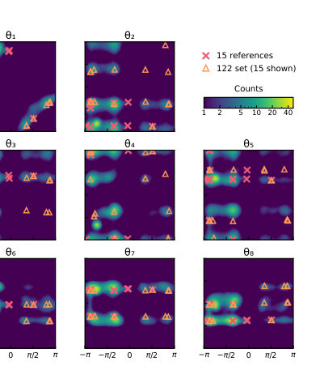
<figcaption class="paper-figure-caption"><b>Fig 1.</b> Fig. 1: Imipramine dihedral definitions and conformational density. (a) Imipramine structure with the nine selected dihedral angles labelled. Atom numbers indicate the indices used to define each dihedral angle, and the inset table lists the corresponding four-atom tuples. (b) Dataset density in dihedral-angle space for θ0 against each remaining selected dihedral angle θ1–θ8. Color indicates smoothed dataset counts for (θ0, θi) values on a logarithmic scale. Pink crosses show the 15-reference conformer set; orange open triangles show the displayed subset from the 122-reference conformer set. The dataset forms well-separated clusters across the allowed dihedral- angle space, broadly...</figcaption>
</figure>
<figure class="paper-figure-card">
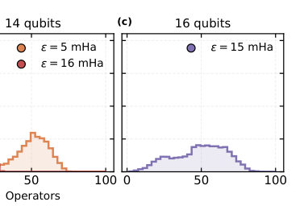
<figcaption class="paper-figure-caption"><b>Fig 2.</b> Fig. 2: Operator counts for each dataset. Number of operators from the operator pool for the 12- (a), 14- (b), and 16-qubit (c) systems in the ADAPT-VQE training data. The 12- and 14-qubit cases use a UCCGSD pool with energy thresholds defined as the difference from CASCI, while the 16-qubit case uses a UCCSD pool with error measured relative to CCSD.</figcaption>
</figure>
<figure class="paper-figure-card">
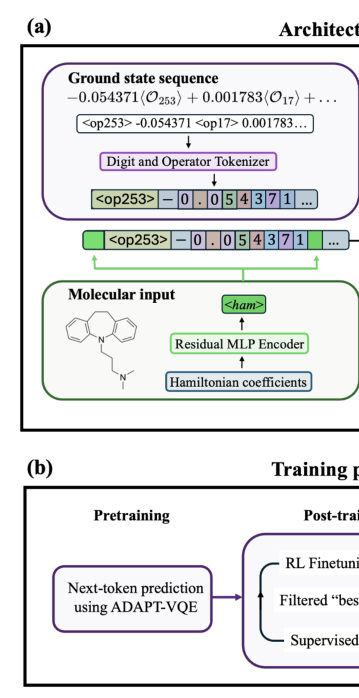
<figcaption class="paper-figure-caption"><b>Fig 3.</b> Fig. 3: Trained-from-scratch transformer architecture and training. (a) ADAPT-VQE ground-state operator sequences are tokenized, with operators and numerical digits represented as individual tokens. Pauli-term coefficients from the molecular Hamiltonian are encoded with a residual MLP and interleaved within the token sequence before processing by the Gemma 3 transformer. (b) During pre- training, the model is trained for next-token prediction on ADAPT-VQE-generated sequences. During post-training, the model is iteratively refined through RL and super- vised fine-tuning on model-generated sequences.</figcaption>
</figure>
<figure class="paper-figure-card">
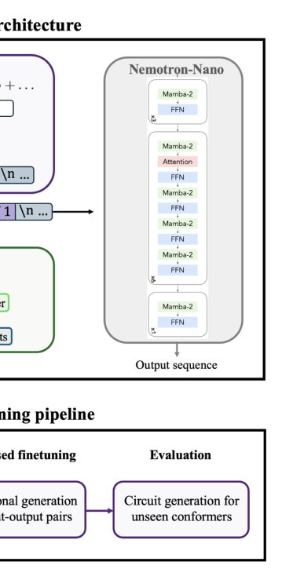
<figcaption class="paper-figure-caption"><b>Fig 4.</b> Fig. 4: Pretrained NVIDIA Nemotron architecture and training. (a) ADAPT-VQE ground-state operator sequences are represented by their corresponding operator-pool indices and coefficients, and tokenized using the standard BPE tok- enizer. The coefficients of the Pauli terms in the molecular Hamiltonian are encoded with a residual MLP and prepended to the token sequence before being processed by the Nemotron Nano transformer. (b) The pretrained model is first adapted to the operator language through continual pretraining and then specialized for circuit gen- eration via supervised fine-tuning on ADAPT-VQE-generated sequences.</figcaption>
</figure>
<figure class="paper-figure-card">
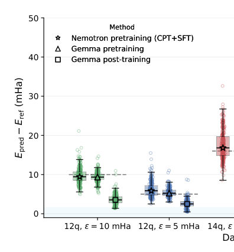
<figcaption class="paper-figure-caption"><b>Fig 5.</b> Fig. 5: Generated circuit energy errors for Nemotron and Gemma models. Generated circuit energy errors after pretraining on ADAPT-VQE data (stars and triangles, respectively) and from the Gemma model after post-training (squares) for all datasets (indicated by color). For each case, individual data points are shown as circles, with summary statistics overlaid as a box-and-whisker plot (the central mark indicates the median, the box spans the interquartile range, and the whiskers extend over the non-outlier range). Energy tolerances ε of the ADAPT-VQE training datasets are shown for reference with grey dashed lines. Models after pretraining faithfully mimic the accuracy of both 12-qubit...</figcaption>
</figure>
</div>
<p><strong>Summary.</strong> The paper introduces ADAPT-GQE, an AI framework that uses Transformer models to automatically synthesize efficient quantum circuits required for calculating molecular ground states. By training on existing high-quality data and using reinforcement learning, it drastically reduces the time needed compared to state-of-the-art iterative methods like ADAPT-VQE. This establishes a pathway toward automated, scalable quantum chemistry simulations on modern hardware.</p>
<p><strong>Why it may be interesting.</strong> This work directly tackles the resource bottleneck in applying quantum computation to chemistry by replacing iterative optimization with a learned generative model, which is highly relevant for scaling quantum algorithms beyond small test cases.</p>
<details>
<summary>Detailed structure</summary>
<p><strong>Main problem.</strong> The core problem is developing scalable methods for quantum state preparation, specifically calculating molecular ground states, because existing iterative algorithms are computationally prohibitive for large molecules.</p>
<p><strong>Main result.</strong> The proposed ADAPT-GQE framework achieves order-of-magnitude reductions in circuit generation time compared to ADAPT-VQE while maintaining or improving state-preparation accuracy on challenging molecules like imipramine.</p>
<p><strong>Method.</strong> The authors use a generative AI approach, training Transformer models (like Gemma) on reference circuits generated by ADAPT-VQE. Reinforcement Learning is then employed to refine circuit generation beyond the initial training data's scope.</p>
<p><strong>Model / system.</strong> The physical system is molecular quantum chemistry, using Hamiltonians derived from molecules like imipramine. The methodology involves mapping these Hamiltonians into a format suitable for large language models (LLMs) to predict optimal quantum circuits.</p>
<p><strong>Key observables.</strong> Energy accuracy ($ ext{E}<em ext_ref="ext{ref">{    ext{pred}}$ vs $    ext{E}</em>$ in mHa), circuit generation time, and the number of required quantum gates/operators.}</p>
<p><strong>Important parameters / regimes.</strong> Qubit count (up to 16 qubits), target energy tolerance ($\epsilon$), and hardware platform (Quantinuum Helios-1).</p>
<p><strong>Assumptions / limitations.</strong> The primary reward function relies on computationally expensive reference energies (CASCI or CCSD) for training, though an alternative reward function was shown to be effective.</p>
<p><strong>Figures summary.</strong> Figures detail the conformational sampling of imipramine using MD/NEB; tables compare computational costs and energy accuracies between ADAPT-VQE and the Transformer models across various qubit counts.</p>
<p><strong>Paper structure.</strong> The paper systematically introduces the limitations of VQE/ADAPT-VQE, details the data generation pipeline (MD/NEB for diverse conformers), presents the LLM architecture for Hamiltonian encoding, and finally demonstrates performance gains via training and RL fine-tuning on hardware.</p>
</details>
<details>
<summary>Abstract</summary>
<p>Quantum state preparation is a key component of many quantum algorithms. Performing this step efficiently is essential for realizing practical quantum advantage in quantum chemistry applications. Iterative algorithms like ADAPT-VQE can produce shallow ground-state preparation circuits, but become computationally prohibitive for the larger molecules relevant to materials science and pharmaceutical development. Here, we introduce ADAPT-GQE, a generative AI framework that learns to synthesize ground-state preparation circuits for electronic structure calculations. We first use ADAPT-VQE to generate high-quality reference circuits, which are then used as targets for training models for circuit generation. Once trained, the model can efficiently propose and score circuits, enabling reinforcement learning (RL) to drive circuit generation accuracy beyond the accuracy of the ADAPT-VQE training data. This pipeline achieves order-of-magnitude reductions in circuit generation time relative to ADAPT-VQE while maintaining comparable or improved state-preparation accuracy. We demonstrate ADAPT-GQE on imipramine, a well-established tricyclic antidepressant that serves as a representative, challenging target for computational modelling in drug stability protocols. We execute generated circuits on Quantinuum Helios-1, representing a milestone for AI-generated quantum chemistry circuits on state-of-the-art quantum hardware. These results establish a pathway toward automated quantum circuit synthesis for utility-scale quantum computational chemistry.</p>
</details>
<p><sub><a href="#top">↑ back to top</a></sub></p>

<p><a id="paper-2607.21919"></a></p>
<h3 id="quantum-multi-label-k-nearest-neighbor"><a href="http://arxiv.org/abs/2607.21919v1">Quantum multi-label k-nearest neighbor</a></h3>
<p><strong>Authors:</strong> Yilin Shen, Qin Liao<br>
<strong>Type:</strong> theory · <strong>Category:</strong> quantum information and computing · <strong>PDF:</strong> <a href="https://arxiv.org/pdf/2607.21919v1">https://arxiv.org/pdf/2607.21919v1</a><br>
<strong>Analysis basis:</strong> full PDF text, analyzed in chunks</p>
<div class="figure-strip-hint">↔ Scroll figures horizontally</div>
<div class="paper-figures-scroll">
<figure class="paper-figure-card">
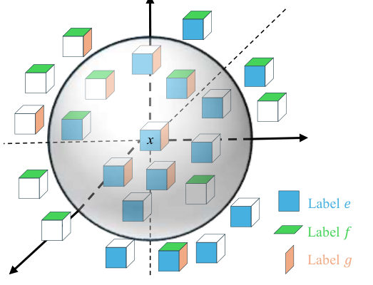
<figcaption class="paper-figure-caption"><b>Fig 1.</b> FIG. 1. An example of the ML-kNN algorithm. The dataset contains 23 instances, each possibly associated with up to three labels e, f, g given in the legend. The circle marks the k = 10 nearest neighbors of the central instance x.</figcaption>
</figure>
<figure class="paper-figure-card">
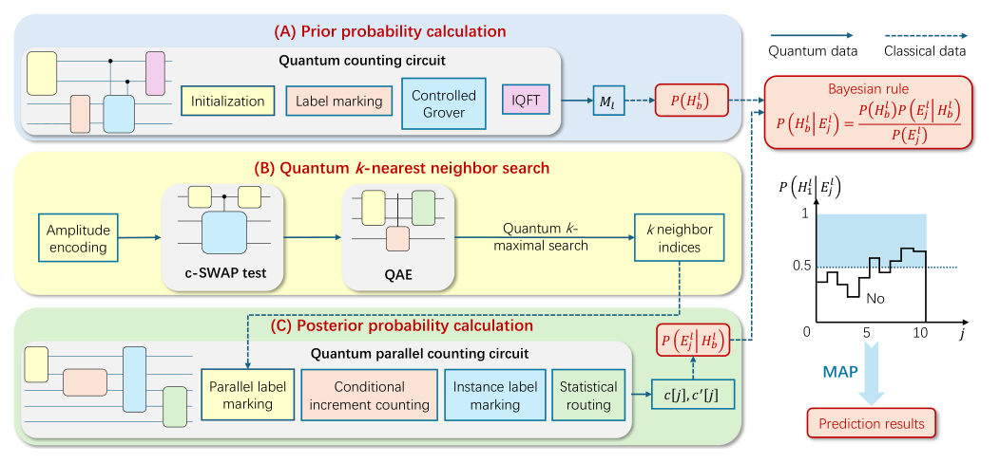
<figcaption class="paper-figure-caption"><b>Fig 2.</b> FIG. 2. Overall workflow of QML-kNN. It is divided into prior probability calculation, quantum k-nearest neighbor search and posterior probability calculation.</figcaption>
</figure>
<figure class="paper-figure-card">
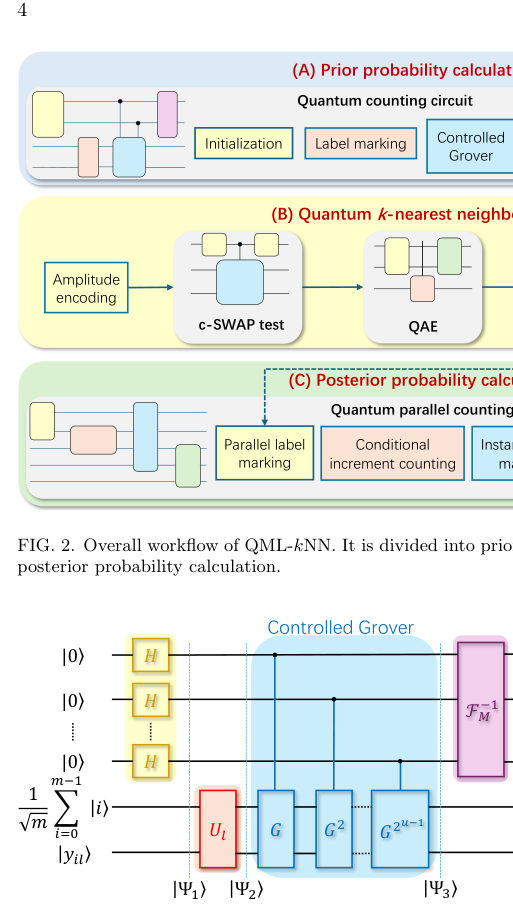
<figcaption class="paper-figure-caption"><b>Fig 3.</b> FIG. 3. Quantum counting circuit for calculating Ml. It mainly integrates controlled Grover iterations with IQFT, starting from a uniform superposition of all training instances.</figcaption>
</figure>
<figure class="paper-figure-card">
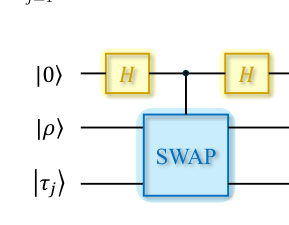
<figcaption class="paper-figure-caption"><b>Fig 4.</b> FIG. 4. Circuit for the c-SWAP test. It consists of two Hadamard gates and a SWAP gate that exchanges the two input states when the control qubit is |1⟩.</figcaption>
</figure>
<figure class="paper-figure-card">
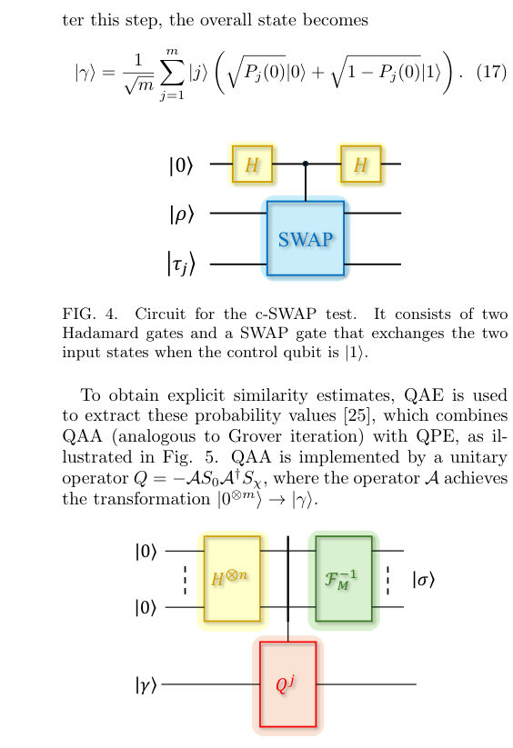
<figcaption class="paper-figure-caption"><b>Fig 5.</b> FIG. 5. The quantum circuit for QAE. QAA process converts the probability information associated with the amplitudes into corresponding phase information, which is subsequently extracted by the QPE procedure.</figcaption>
</figure>
</div>
<p><strong>Summary.</strong> This paper introduces QML-kNN, a quantum algorithm designed to overcome the computational bottleneck of traditional ML-kNN for multi-label classification. By utilizing quantum circuits for probability estimation and neighbor searching, it achieves significant theoretical speedups and superior performance compared to its classical counterpart.</p>
<p><strong>Why it may be interesting.</strong> It demonstrates a direct application of advanced quantum algorithms (QAE, Quantum Counting) to solve a complex machine learning problem, providing concrete theoretical speedups that could motivate hardware development in the NISQ era.</p>
<details>
<summary>Detailed structure</summary>
<p><strong>Main problem.</strong> The classical Multi-label k-Nearest Neighbor (ML-kNN) algorithm suffers from unacceptable time complexity when applied to large-scale, high-dimensional datasets.</p>
<p><strong>Main result.</strong> The proposed Quantum ML-kNN (QML-kNN) significantly reduces the time complexity and outperforms classical methods across all tested evaluation metrics.</p>
<p><strong>Method.</strong> It integrates quantum techniques—including quantum counting circuits, c-SWAP tests, and a specialized Quantum Parallel Counting Circuit (QPCC)—to accelerate probability estimation and neighbor searching.</p>
<p><strong>Model / system.</strong> The model is an algorithmic framework designed to replace classical ML-kNN steps with quantum subroutines. These include using Quantum Phase Estimation for prior probabilities and amplitude encoding/c-SWAP tests for similarity calculation.</p>
<p><strong>Key observables.</strong> Hamming Loss, Coverage, Ranking Loss, One-error, Macro-AUC, and computational time complexity (Big O notation).</p>
<p><strong>Important parameters / regimes.</strong> Feature dimension ($U$), training instances ($m$), number of neighbors ($k$), and number of labels ($Q$).</p>
<p><strong>Assumptions / limitations.</strong> The analysis relies on theoretical models for quantum speedups; practical implementation is currently limited by existing quantum hardware.</p>
<p><strong>Figures summary.</strong> Figures illustrate the overall QML-kNN workflow across three modules, show performance comparisons between classical and quantum approaches (e.g., Fig. 8), and plot the leading-order complexity reduction achieved by the quantum algorithm (e.g., Fig. 9).</p>
<p><strong>Paper structure.</strong> The paper first establishes the computational bottleneck of ML-kNN. It then details the QML-kNN framework across three modules: Module A for prior probabilities using QPE/Grover's, Module B for neighbor search via c-SWAP and quantum k-maximal search, and Module C for posterior probability calculation using a QPCC.</p>
</details>
<details>
<summary>Abstract</summary>
<p>Although multi-label k-nearest neighbor (ML-kNN) is able to effectively solve multi-label learning (MLL) problem with local neighborhood similarity, its time complexity is nearly unacceptable with large-scale datasets. To solve this issue, we propose a novel ML-kNN algorithm with quantum computing techniques, which called quantum multi-label k-nearest neighbor (QML-kNN). In particular, we first accelerate the calculation of the prior probability by taking advantage of quantum phase estimation and Grover's amplitude amplification. Then, a controlled-SWAP test and a quantum k-maximal similarity search are used for efficiently identifying the neighbors. Subsequently, a quantum parallel counting circuit (QPCC) is designed to rapidly calculate the posterior probabilities. Experimental results demonstrate that QML-kNN is able to significantly reduce the time complexity of solving multi-label problems with performance improvement, achieving a substantial speedup over the classical MLL algorithm.</p>
</details>
<p><sub><a href="#top">↑ back to top</a></sub></p>

<p><a id="paper-2607.21699"></a></p>
<h3 id="real-space-imaging-of-band-topology-via-wavefunction-zeros"><a href="http://arxiv.org/abs/2607.21699v1">Real-Space Imaging of Band Topology via Wavefunction Zeros</a></h3>
<p><strong>Authors:</strong> Julian Ingham, Raquel Queiroz<br>
<strong>Type:</strong> theory · <strong>Category:</strong> other · <strong>PDF:</strong> <a href="https://arxiv.org/pdf/2607.21699v1">https://arxiv.org/pdf/2607.21699v1</a><br>
<strong>Analysis basis:</strong> full PDF text, analyzed in chunks</p>
<div class="figure-strip-hint">↔ Scroll figures horizontally</div>
<div class="paper-figures-scroll">
<figure class="paper-figure-card">
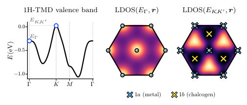
<figcaption class="paper-figure-caption"><b>Fig 1.</b> FIG. 1: Imaging the band topology of TMDs. Left: valence-band dispersion of 1H-TMDs. The band transforms with C3 eigenvalues 1 and e2πi/3 at Γ and K, indicating a topologically obstructed atomic insulator (OAI). Middle: LDOS(EΓ, r); Right: LDOS(EK,K′, r). At K, symmetry- enforced zeros appear at the 1a and 1b positions (crosses); no zeros appear at Γ. The change in LDOS between these two energies is a real-space signature of an OAI.</figcaption>
</figure>
<figure class="paper-figure-card">
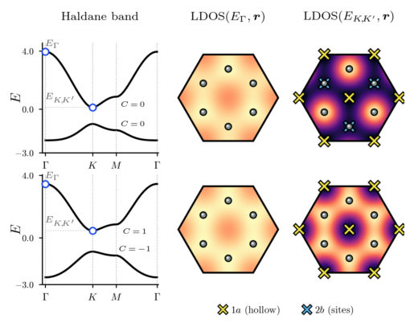
<figcaption class="paper-figure-caption"><b>Fig 2.</b> FIG. 2: Imaging the Chern number of the Haldane model. Top row: trivial phase, C = 0; bottom row: Chern phase, |C| = 1. In the trivial phase, the K/K′ states have zeros on the same sublattice. In the Chern phase the two valleys have zeros (crosses) on opposite sublattices, leaving only the hexagon centre dark in the total LDOS. The distinct dark sets allow inference of the Chern number modulo three.</figcaption>
</figure>
<figure class="paper-figure-card">
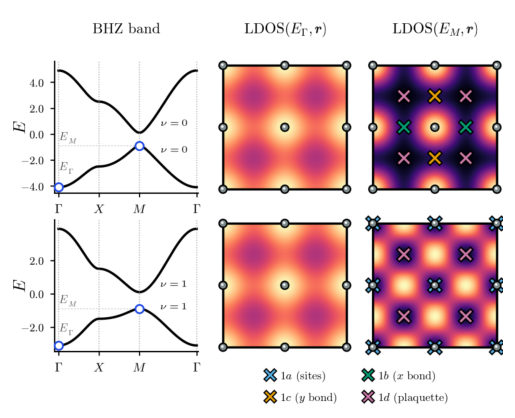
<figcaption class="paper-figure-caption"><b>Fig 3.</b> FIG. 3: Imaging the Z2 invariant of the BHZ model. Top row: trivial phase, ν = 0; bottom row: quantum spin Hall phase, ν = 1. In the trivial phase the bonds and plaquette centre have zeros (crosses) at M; in the quantum spin Hall phase the bonds are bright. The Kane-Mele Z2 invariant can be diagnosed simply by whether the bonds have the same (ν = 1) or opposite (ν = 0) contrast at Γ and M.</figcaption>
</figure>
<figure class="paper-figure-card">
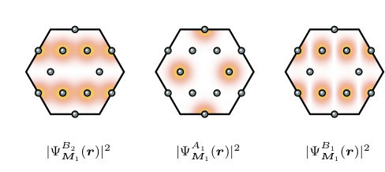
<figcaption class="paper-figure-caption"><b>Fig 4.</b> FIG. 4: Kagome Van Hove dark sets. The wavefunctions at the VHS of an s orbital kagome lattice correspond to irreps A1 and B1,2. At the momentum M1, the A1 irrep is forced- dark on B and C, while the B1,2 irreps are forced dark on A.</figcaption>
</figure>
<figure class="paper-figure-card">
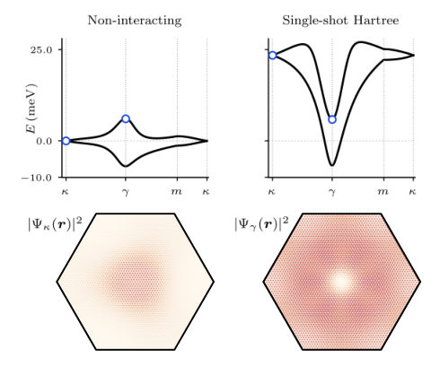
<figcaption class="paper-figure-caption"><b>Fig 5.</b> FIG. 5: Band renormalisation in moiré graphene. Top: non-interacting and Hartree-renormalised narrow bands of TBG near θ = 1.05◦. The Γ states (bottom right) are forced- dark at the AA-stacked regions, where the K states (bottom left) are bright. The Hartree potential is strongest at the AA regions, strongly increasing the energy at K, but not at Γ where the wavefunction avoids the Hartree potential.</figcaption>
</figure>
</div>
<p><strong>Summary.</strong> The paper introduces a novel technique to determine band topology by analyzing where the wavefunction must vanish in real space, using symmetry constraints. By mapping these 'dark spots' at high-symmetry points, researchers can infer fundamental topological invariants like the Chern number or $\mathbb{Z}_2$ index. This connects advanced group theory directly to experimental techniques like STM imaging.</p>
<p><strong>Why it may be interesting.</strong> This work provides a powerful theoretical link between abstract group representation theory (mathematics) and measurable real-space electronic structure (condensed matter), offering an alternative diagnostic tool to traditional momentum-space topological measurements.</p>
<details>
<summary>Detailed structure</summary>
<p><strong>Main problem.</strong> To determine the topological invariants of electronic bands by probing real-space properties, specifically the symmetry-enforced zeros in the wavefunction's local density of states (LDOS).</p>
<p><strong>Main result.</strong> The pattern and location of these 'dark spots' at high-symmetry momenta are sufficient to uniquely determine the irreducible representation ($
ho$) of the band structure group, thereby diagnosing topological invariants like the Chern number or $\mathbb{Z}_2$ index.</p>
<p><strong>Method.</strong> The method uses group theory to derive symmetry selection rules that force wavefunctions to vanish (create zeros) at specific real-space positions ($r^*$) when evaluated at high-symmetry momenta ($k^*$).</p>
<p><strong>Model / system.</strong> The analysis is applied to crystalline solids, including 2D materials like TMDs, and theoretical models such as the Haldane model, BHZ model, and Kagome lattice.</p>
<p><strong>Key observables.</strong> Symmetry-enforced zeros ('dark spots') in the Local Density of States (LDOS) measured by STM; local indices ($m_{k^*, r^*}$).</p>
<p><strong>Important parameters / regimes.</strong> High-symmetry momenta ($k^*$), symmetry group representations ($
ho$, $  ext{irrep}$), and topological invariants (Chern number, $\mathbb{Z}_2$ index).</p>
<p><strong>Assumptions / limitations.</strong> The method relies on probing high-symmetry momenta and assumes the bias energy intersects a single, isolated irreducible representation.</p>
<p><strong>Figures summary.</strong> Figures illustrate the detection of band topology in TMDs by comparing LDOS changes between $\Gamma$ and $K$, showing zero patterns that distinguish topological phases (e.g., Chern number mod 3 or $\mathbb{Z}_2$ index).</p>
<p><strong>Paper structure.</strong> The paper establishes a general theorem linking symmetry-enforced zeros to group representation theory, then applies this framework sequentially to specific physical models: TMDs, Haldane model, BHZ model, Kagome lattice, and Twisted Bilayer Graphene.</p>
</details>
<details>
<summary>Abstract</summary>
<p>We prove that the wavefunction of a crystal at a high-symmetry momentum, $Ψ_{\boldsymbol{k}_*}(\boldsymbol{r})$, has symmetry-enforced zeros at certain positions in the unit cell, using a new invariant fixed uniquely by the symmorphic symmetry representation of the wavefunction. This allows one to infer the topology of an electronic band by probing zeros of the charge density, and in turn to connect scanning tunnelling microscopy to the group representation theory of bandstructure. We apply the theorem to 1H transition metal dichalcogenides, where it detects the obstructed atomic limit of WSe$_2$, the Haldane model, where it detects the Chern number modulo three, and the Bernevig-Hughes-Zhang model, where it detects the $\mathbb{Z}_2$ index. In addition, the zeros have important consequences for interaction effects: in kagome metals, they fix the sublattice structure of Van Hove wavefunctions, and in twisted bilayer graphene, they explain the qualitative interaction-induced reshaping of the flat bands.</p>
</details>
<p><sub><a href="#top">↑ back to top</a></sub></p>

<p><a id="paper-2607.22276"></a></p>
<h3 id="the-threshold-theorem-in-watts-fault-tolerance-as-a-question-about-objective-probability"><a href="http://arxiv.org/abs/2607.22276v1">The Threshold Theorem in Watts: Fault Tolerance as a Question About Objective Probability</a></h3>
<p><strong>Authors:</strong> Amit Hagar<br>
<strong>Type:</strong> theory · <strong>Category:</strong> quantum information and computing · <strong>PDF:</strong> <a href="https://arxiv.org/pdf/2607.22276v1">https://arxiv.org/pdf/2607.22276v1</a><br>
<strong>Analysis basis:</strong> full PDF text, analyzed in chunks</p>
<div class="figure-strip-hint">↔ Scroll figures horizontally</div>
<div class="paper-figures-scroll">
<figure class="paper-figure-card">
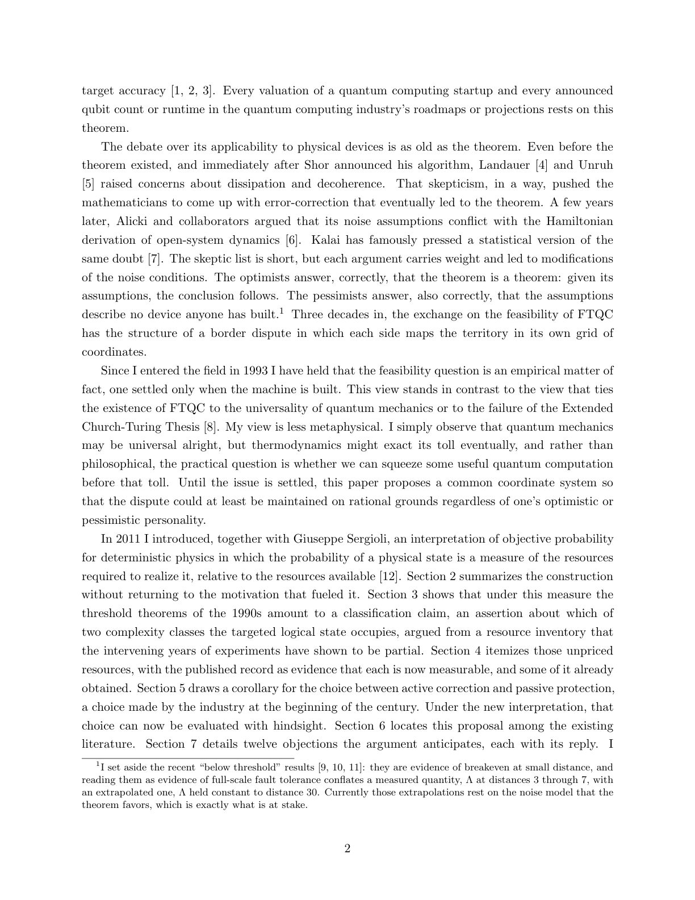
<figcaption class="paper-figure-caption"><b>Fig 1.</b> Low-resolution page preview, page 2</figcaption>
</figure>
<figure class="paper-figure-card">
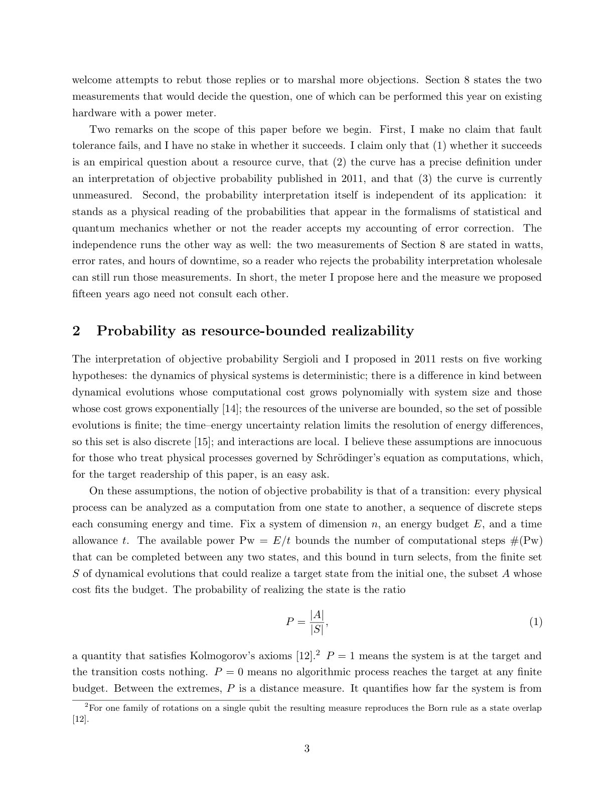
<figcaption class="paper-figure-caption"><b>Fig 2.</b> Low-resolution page preview, page 3</figcaption>
</figure>
<figure class="paper-figure-card">
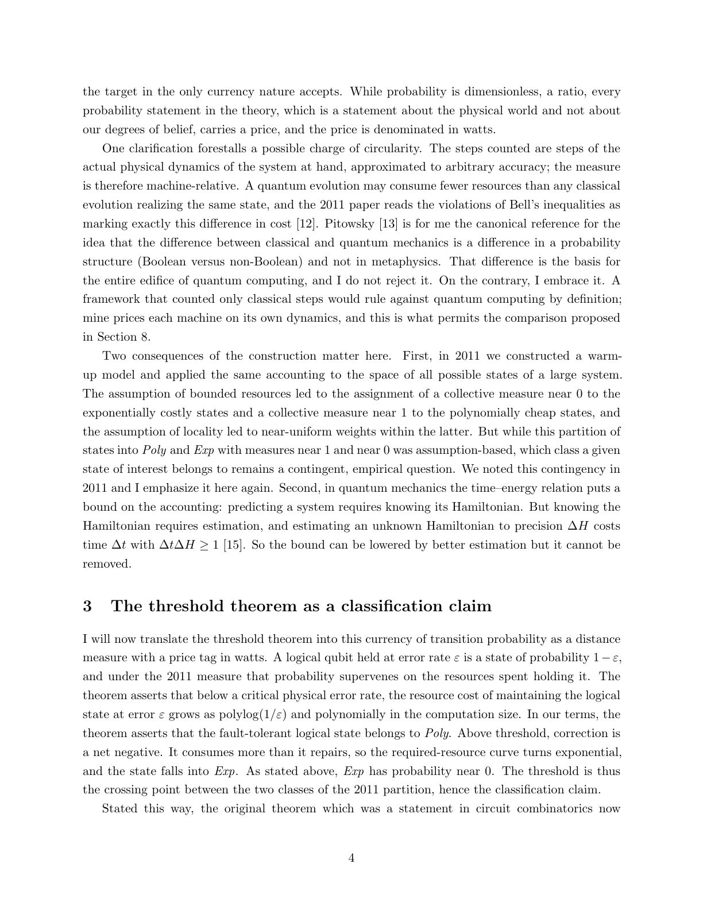
<figcaption class="paper-figure-caption"><b>Fig 3.</b> Low-resolution page preview, page 4</figcaption>
</figure>
<figure class="paper-figure-card">

<figcaption class="paper-figure-caption"><b>Fig 4.</b> Low-resolution page preview, page 5</figcaption>
</figure>
<figure class="paper-figure-card">

<figcaption class="paper-figure-caption"><b>Fig 5.</b> Low-resolution page preview, page 6</figcaption>
</figure>
</div>
<p><strong>Summary.</strong> This paper reframes the Threshold Theorem for fault-tolerant quantum computing by applying an objective probability measure based on resource costs (like energy). The authors argue that standard analyses neglect crucial overheads such as calibration and decoding power. By quantifying these missing resources in watts, they transform a theoretical debate into a concrete, measurable engineering challenge.</p>
<p><strong>Why it may be interesting.</strong> It provides a powerful physical lens—resource accounting—to re-evaluate fundamental computational complexity results in quantum information theory, connecting abstract theorems to measurable engineering constraints.</p>
<details>
<summary>Detailed structure</summary>
<p><strong>Main problem.</strong> The paper reinterprets the Threshold Theorem for Fault-Tolerant Quantum Computing (FTQC) by framing it as a question of objective resource probability rather than just circuit combinatorics.</p>
<p><strong>Main result.</strong> By incorporating previously unpriced overheads like calibration, decoding latency, and entropy flushing, the required resources to maintain logical coherence are quantified in watts per decade of error suppression.</p>
<p><strong>Method.</strong> The authors translate FTQC feasibility into a measurable resource cost (watts/decade) using a novel objective probability measure derived from Hagar &amp; Sergioli's work.</p>
<p><strong>Model / system.</strong> The system analyzed is Fault-Tolerant Quantum Computation, specifically concerning the scaling of error correction overheads for logical qubits.</p>
<p><strong>Key observables.</strong> Watts per decade of suppressed logical error; resource cost curves comparing quantum vs. classical computation.</p>
<p><strong>Important parameters / regimes.</strong> Logical error rate ($\epsilon$); machine size (number of physical qubits/distance); power budget (watts).</p>
<p><strong>Assumptions / limitations.</strong> The interpretation relies on deterministic dynamics and the assumption that all necessary resources (calibration, decoding, etc.) must be accounted for in the objective probability measure.</p>
<p><strong>Paper structure.</strong> The paper first introduces the resource-bounded objective probability framework. It then applies this to FTQC, identifying four previously unpriced overheads. Finally, it translates the theoretical threshold into a concrete measurement: watts per decade of error suppression.</p>
</details>
<details>
<summary>Abstract</summary>
<p>In 2011 Hagar &amp; Sergioli proposed a new interpretation of objective probability in deterministic physics. On it, the probability of a physical state supervenes on the resources, energy over time, required to realize it from a given state, relative to the resources available (arXiv:1101.3521). The motivation for that paper was an objective alternative to QBism, the view that sees quantum probabilities as subjective degrees of belief. Here I apply this interpretation to a more practical subject matter: fault-tolerant quantum computing (FTQC). Under the resource-bounded measure Hagar &amp; Sergioli proposed, the threshold theorem becomes a claim about classification: it asserts that error-corrected logical states belong to the class of relatively cheaply realizable states, whose probability remains near 1 as the machine grows. The theorem originally derived this claim from a resource inventory that was partial, and left out four resources consumed by error correction: calibration of a drifting device, decoding within the correction cycle, coherence as a finite time budget, and entropy flush through fresh ancillas. These entered the original derivation at zero price. Here I translate the feasibility of FTQC into a measurable quantity, watts per decade of suppressed logical error (a decade, in the engineer's usage, being one factor of ten in the error rate). I then show that the published record already contains its first data points for this translation, and I state the two measurements that would settle the question empirically. The three-decade debate on FTQC, conducted so far as an exchange about noise-model assumptions, turns out to be, under this interpretation, a quantitative dispute about a single object: the resource-bounded objective probability of the target logical states.</p>
</details>
<p><sub><a href="#top">↑ back to top</a></sub></p>

<p><a id="paper-2607.22088"></a></p>
<h3 id="weak-permanent-anti-concentration-for-random-gaussian-matrices-in-boson-sampling"><a href="http://arxiv.org/abs/2607.22088v1">Weak Permanent Anti-Concentration for Random Gaussian Matrices in Boson Sampling</a></h3>
<p><strong>Authors:</strong> Fei Meng, Bin Cheng, Jianan Li, Man-Hong Yung<br>
<strong>Type:</strong> theory · <strong>Category:</strong> quantum information and computing · <strong>PDF:</strong> <a href="https://arxiv.org/pdf/2607.22088v1">https://arxiv.org/pdf/2607.22088v1</a><br>
<strong>Analysis basis:</strong> full PDF text, analyzed in chunks</p>
<div class="figure-strip-hint">↔ Scroll figures horizontally</div>
<div class="paper-figures-scroll">
<figure class="paper-figure-card">

<figcaption class="paper-figure-caption"><b>Fig 1.</b> Low-resolution page preview, page 2</figcaption>
</figure>
<figure class="paper-figure-card">

<figcaption class="paper-figure-caption"><b>Fig 2.</b> Low-resolution page preview, page 3</figcaption>
</figure>
<figure class="paper-figure-card">

<figcaption class="paper-figure-caption"><b>Fig 3.</b> Low-resolution page preview, page 4</figcaption>
</figure>
<figure class="paper-figure-card">

<figcaption class="paper-figure-caption"><b>Fig 4.</b> Low-resolution page preview, page 5</figcaption>
</figure>
<figure class="paper-figure-card">

<figcaption class="paper-figure-caption"><b>Fig 5.</b> Low-resolution page preview, page 6</figcaption>
</figure>
</div>
<p><strong>Summary.</strong> This paper analyzes the classical hardness of boson sampling by deriving a weak anti-concentration bound for the permanent of random Gaussian matrices. Using advanced probabilistic methods, the authors show that while they cannot prove the full conjecture, their result implies that simulating boson sampling to high precision would have profound consequences for computational complexity theory.</p>
<p><strong>Why it may be interesting.</strong> This work directly addresses the theoretical foundations of quantum computational advantage in photonic systems (boson sampling) by providing rigorous mathematical tools to bound key physical observables (the permanent).</p>
<details>
<summary>Detailed structure</summary>
<p><strong>Main problem.</strong> To establish a weak anti-concentration bound for the permanent of random Gaussian matrices, which is crucial for understanding the classical hardness of boson sampling.</p>
<p><strong>Main result.</strong> The authors established a weak anti-concentration bound showing that the probability of the Gaussian permanent being superexponentially small is bounded by $O(n^{-c})$, implying potential consequences for collapsing the polynomial hierarchy if true.</p>
<p><strong>Method.</strong> The proof employs an extension of the row-exposure strategy, utilizing advanced concentration inequalities like McDiarmid's inequality and analyzing recursive structures involving $\lambda$-heavy minors.</p>
<p><strong>Model / system.</strong> The study focuses on Boson Sampling, where the probability distribution is governed by the permanent of a submatrix approximated by entries i.i.d. from the standard complex Gaussian distribution ($G_{n 	imes n}$).</p>
<p><strong>Key observables.</strong> The primary observable is the permanent, $ ext{Per}(M)$, and its concentration properties relative to its standard deviation ($\sqrt{n!}$).</p>
<p><strong>Important parameters / regimes.</strong> Matrix size $n$, the exponent $c$ in the bound $O(n^{-c})$, and the relationship between classical simulation error (total variation distance) and computational complexity.</p>
<p><strong>Assumptions / limitations.</strong> The result is a <em>weak</em> version of the Permanent Anti-Concentration Conjecture (PACC), and the final hardness implication relies on assuming other unproven conjectures hold.</p>
<p><strong>Paper structure.</strong> The paper builds upon prior work by adapting techniques from Bernoulli matrices to Gaussian random matrices, proceeding through a structured proof involving warm-up, growth, and endgame phases using concentration bounds.</p>
</details>
<details>
<summary>Abstract</summary>
<p>Recent demonstrations of quantum computational advantage have been driven largely by sampling problems. A prominent model, boson sampling, involves sampling from the output distribution of a linear optical network. However, its classical hardness hinges on two plausible yet less-studied conjectures: the average-case hardness of approximating Gaussian permanents, and the permanent anti-concentration conjecture (PACC). The PACC is a purely mathematical assertion regarding the distributional properties of random Gaussian matrices. While the typical magnitude of the permanent has been established for discrete random matrices, the complex Gaussian case, which governs transition amplitudes in linear optical networks, has remained open. Here, we establish a weak anti-concentration bound by upper-bounding the probability that a random Gaussian permanent is superexponentially smaller than its standard deviation. Tightening this bound to an inverse-polynomial fraction would prove the original PACC. As a corollary, we establish the typical magnitude of Gaussian permanents, on par with Tao and Vu's seminal result for Bernoulli matrices. Combined with the Aaronson-Arkhipov framework, our result implies that classically simulating boson sampling to within a superexponentially small total variation distance would collapse the polynomial hierarchy, assuming the remaining conjectures hold.</p>
</details>
<p><sub><a href="#top">↑ back to top</a></sub></p>

<p><a id="paper-2607.22245"></a></p>
<h3 id="zero-field-magnetic-structure-of-the-antiferromagnetic-metal-eusnp"><a href="http://arxiv.org/abs/2607.22245v1">Zero-field magnetic structure of the antiferromagnetic metal EuSnP</a></h3>
<p><strong>Authors:</strong> Mizuki Urai, Hiraku Saito, Daisuke Nishio-Hamane, Taro Nakajima, Rina Takagi<br>
<strong>Type:</strong> experiment · <strong>Category:</strong> strongly correlated electrons · <strong>PDF:</strong> <a href="https://arxiv.org/pdf/2607.22245v1">https://arxiv.org/pdf/2607.22245v1</a><br>
<strong>Analysis basis:</strong> full PDF text, analyzed in chunks</p>
<div class="figure-strip-hint">↔ Scroll figures horizontally</div>
<div class="paper-figures-scroll">
<figure class="paper-figure-card">

<figcaption class="paper-figure-caption"><b>Fig 1.</b> FIG. 1. (a) Crystal structure of EuSnP [5], drawn using visu- alizing software VESTA [6]. (b) Temperature dependence of resistivity normalized at 300 K. (Inset) Enlarged plot below 30 K. (c) Magnetic susceptibility measured at 1 T. (Inset) Inverse of magnetic susceptibility. (d) Magnetization curves at 2 K.</figcaption>
</figure>
<figure class="paper-figure-card">

<figcaption class="paper-figure-caption"><b>Fig 2.</b> FIG. 2. (a,b) Scanning ranges of reciprocal space in the (a) (h, h, l) and (b) (h, 0, l) planes. Observed nuclear Bragg reflections at (1,1,0), (1,1,2), and (1,0,2), and magnetic Bragg reflections at (1,1,0.5) and (1,0,0.5) are indicated by white- and yellow-filled circles, respectively. (c–i) Reciprocal space scans in the (h, h, l) plane at 40 K and 2.3 K. (j–p) Reciprocal space scans in the (h, 0, l) plane at 25.8 K and 2.4 K. The gray-colored regions around (0, 0, 0) in (c), (g), (j) and (n) are not accessible due to the presence of the direct beam. (q) Temperature evolution of the magnetic Bragg peak at (1,1,0.5). (r,s) Temperature dependence of (r) the integrated intensity of the magnetic...</figcaption>
</figure>
<figure class="paper-figure-card">

<figcaption class="paper-figure-caption"><b>Fig 3.</b> FIG. 3. (a,b) Candidate magnetic structures characterized by a magnetic propagation vector q = (0, 0, 1/2), with magnetic moments aligned parallel to the c axis. The nearest-neighbor Eu moments are aligned (a) parallel in Model 1 (A-type) and (b) antiparallel in Model 2 (G-type). (a) and (b) were drawn using visualizing software VESTA [6]. (c) The l-dependence of</figcaption>
</figure>
<figure class="paper-figure-card">

<figcaption class="paper-figure-caption"><b>Fig 4.</b> FIG. 4. Comparison of the observed and calculated structure factors for nuclear and magnetic diffraction (see the text in Appendix A for details).</figcaption>
</figure>
</div>
<p><strong>Summary.</strong> This experimental work used neutron diffraction on EuSnP to map its zero-field magnetic structure. The findings confirm an A-type antiferromagnetism, where the local Eu2+ moments are ferromagnetically coupled within layers but antiferromagnetically stacked along the c-axis. This structural determination helps explain the material's complex magnetic behavior.</p>
<p><strong>Why it may be interesting.</strong> The study provides a concrete example of localized magnetism (Eu2+ moments) interacting with itinerant electrons, which is central to understanding strongly correlated electron systems and complex magnetic phase transitions in solids.</p>
<details>
<summary>Detailed structure</summary>
<p><strong>Main problem.</strong> To determine the zero-field magnetic structure of the antiferromagnetic metal EuSnP and understand its microscopic origin.</p>
<p><strong>Main result.</strong> The material exhibits a collinear A-type antiferromagnetic structure, characterized by ferromagnetic alignment within the Eu–P layers and antiferromagnetic coupling along the stacking direction.</p>
<p><strong>Method.</strong> Single-crystal neutron diffraction experiments were used to search for and analyze magnetic Bragg reflections as a function of temperature and scattering vector.</p>
<p><strong>Model / system.</strong> The system is the antiferromagnetic metal EuSnP, containing localized divalent Eu2+ moments interacting with conduction electrons in a tetragonal lattice structure. The analysis compared observed magnetic structure factors against theoretical models (A-type vs G-type).</p>
<p><strong>Key observables.</strong> Magnetic propagation vector q = (0, 0, 1/2); Magnetic Bragg peak intensities; Magnetic susceptibility and resistivity anomalies.</p>
<p><strong>Important parameters / regimes.</strong> Néel temperature TN ≈ 21 K; Estimated magnetic moment μ ≈ 6.5 to 7.1 $\mu_B$.</p>
<p><strong>Assumptions / limitations.</strong> The analysis relies on fitting observed structure factors using theoretical models derived from the crystal structure and assuming specific sample dimensions for absorption corrections.</p>
<p><strong>Figures summary.</strong> Figures show temperature dependence of resistivity, susceptibility, and magnetic Bragg peak intensities; subsequent figures compare observed vs. calculated squared magnetic structure factors for candidate A-type and G-type models.</p>
<p><strong>Paper structure.</strong> The paper proceeds by characterizing the bulk magnetic properties (resistivity/susceptibility) near TN, followed by detailed single-crystal neutron diffraction measurements to determine the propagation vector q. The core of the analysis involves fitting observed magnetic reflections against theoretical structure factor calculations for competing magnetic models to confirm the A-type ordering.</p>
</details>
<details>
<summary>Abstract</summary>
<p>We investigated the zero-field magnetic structure of the antiferromagnetic metal EuSnP through single-crystal neutron diffraction experiments. The magnetic propagation vector in the magnetically ordered phase was determined to be $(0,0,1/2)$, indicating that commensurate antiferromagnetic ordering is realized in this material. The detailed magnetic structure analysis revealed a collinear A-type antiferromagnetic structure with ferromagnetic alignment of Eu$^{2+}$ moments within the Eu--P layer. The present findings provide a microscopic basis for understanding the intriguing magnetic behaviors of EuSnP, as exemplified by the multiple metamagnetic transitions in the antiferromagnetic state and the strong pressure dependence of the magnetic transition temperature.</p>
</details>
<p><sub><a href="#top">↑ back to top</a></sub></p>
</details>
<h2 id="secondary-cond-mat-archives">Secondary cond-mat archives</h2>
<p><em>Papers from cond-mat.mtrl-sci, mes-hall, other, soft, supr-con. These archives are de-prioritized — they appear at the end regardless of relevance score.</em></p>
<h3 id="relevant-in-secondary-archives-9">Relevant in secondary archives (9)</h3>

<p><a id="paper-2607.22235"></a></p>
<h3 id="quantum-transport-in-cooper-pair-splitters-using-hierarchical-equations-of-motion"><a href="http://arxiv.org/abs/2607.22235v1">Quantum transport in Cooper pair splitters using hierarchical equations of motion</a></h3>
<p><strong>Authors:</strong> Riya Baruah, Neill Lambert, Franco Nori, Christian Flindt<br>
<strong>Type:</strong> theory · <strong>Category:</strong> statistical mechanics · <strong>PDF:</strong> <a href="https://arxiv.org/pdf/2607.22235v1">https://arxiv.org/pdf/2607.22235v1</a><br>
<strong>Analysis basis:</strong> full PDF text, analyzed in chunks
<strong>Topic relevance:</strong> 🔥 <code>methods for driven-dissipative</code> <strong>5/5</strong> · 🔥 <code>Keldysh / 2PI / non-Gaussian methods</code> <strong>4/5</strong> · <code>Kondo &amp; dissipative impurity</code> <strong>3/5</strong> · <code>non-equilibrium dynamics</code> <strong>3/5</strong> · <code>non-equilibrium universality</code> <strong>2/5</strong> · <code>correlated / nonlocal dissipation</code> <strong>1/5</strong> · <code>driven-dissipative phase transition</code> <strong>1/5</strong></p>
<div class="figure-strip-hint">↔ Scroll figures horizontally</div>
<div class="paper-figures-scroll">
<figure class="paper-figure-card">

<figcaption class="paper-figure-caption"><b>Fig 1.</b> FIG. 1. Quantum transport in a Cooper pair splitter. (a) The device consists of a left and a right quantum dot that are cou- pled to a superconductor and separate normal-state leads. If a voltage is applied across the quantum dots, and the quantum dot levels are aligned, εL = εR, charge transport takes place via elastic cotunneling (ECT). When the normal-state leads function as drains, charge transport takes place via Cooper pair splitting (CPS), if the quantum dot levels are asymmetri- cally detuned, εL = −εR. The amplitudes for ECT and CPS are denoted by κ and γ, respectively, and Γ is the rate for tunneling to the leads. (b) Particle currents in the left and right leads for ECT. (c)...</figcaption>
</figure>
<figure class="paper-figure-card">

<figcaption class="paper-figure-caption"><b>Fig 2.</b> FIG. 2. Charge transport with finite voltages. (a) A fi- nite voltage is applied between the normal-state electrodes, and elastic cotunneling (ECT) is on resonance, when the two quantum dot levels are aligned. The charge transport is sup- pressed, if the quantum dot levels are moved outside the volt- age window. (b) Here, both normal-state electrodes function as drains, and Cooper pair splitting (CPS) is on resonance, when the two quantum dot levels are oppositely detuned. The charge transport is suppressed, if one of the quantum dot lev- els is moved below the chemical potential of the leads. The parameters are γ = 0.4ℏΓ, κ = 2ℏΓ, kBT = 1ℏΓ, and (a) µL = −µR = 10ℏΓ and (b) µL = µR = −10ℏΓ,...</figcaption>
</figure>
<figure class="paper-figure-card">

<figcaption class="paper-figure-caption"><b>Fig 3.</b> FIG. 3. Finite voltages. (a) Particle current in the right lead for different voltages across the device with µL = −µR, where the transport is dominated by elastic cotunneling (ECT). (b) Particle current in the right lead for different values of the chemical potential in both leads, µL = µR, and the transport is dominated by Cooper pair splitting (CPS). The other pa- rameters are γ = 2ℏΓ, κ = 3ℏΓ, and kBT = 1ℏΓ.</figcaption>
</figure>
<figure class="paper-figure-card">

<figcaption class="paper-figure-caption"><b>Fig 4.</b> FIG. 4. Finite temperatures. (a) Particle current in the right lead for different temperatures of the leads and opposite chem- ical potentials, µL = −µR = 5ℏΓ, such that the transport is dominated by elastic cotunneling (ECT). (b) Particle current in the right lead for different temperatures of the leads and the same chemical potentials, µL = µR = −5ℏΓ, such that the transport is dominated by Cooper pair splitting (CPS). The other parameters are γ = 2ℏΓ and κ = 3ℏΓ.</figcaption>
</figure>
<figure class="paper-figure-card">

<figcaption class="paper-figure-caption"><b>Fig 5.</b> Figure 3 illustrates how the finite voltage bias affects transport through the Cooper pair splitter. In Fig. 3(a), we consider elastic cotunneling and show the current as a function of the detuning for several values of the applied bias. The current exhibits a resonance centered at zero detuning, where elastic cotunneling is most efficient. As the bias voltage is reduced, the resonance peak decreases in height and becomes narrower. This behavior reflects the shrinking transport window available for electrons tunneling between the leads. While the resonance con- dition itself is unaffected by the bias, a smaller voltage limits the range of energies that contribute to transport. A similar...</figcaption>
</figure>
</div>

<p><strong>Summary.</strong> This paper develops and applies the Hierarchical Equations of Motion (HEOM) method to model charge transport in Cooper pair splitters. It moves beyond simplified Markovian descriptions to accurately predict currents under realistic conditions involving finite voltage or temperature biases. The results establish HEOM as a crucial tool for understanding non-equilibrium quantum dynamics in superconducting hybrid devices.</p>
<p><strong>Why it may be interesting.</strong> This work is highly relevant as it applies advanced open quantum system techniques (HEOM) to a solid-state superconducting device, providing tools for modeling non-equilibrium transport in mesoscopic quantum circuits.</p>
<details>
<summary>Detailed structure</summary>
<p><strong>Main problem.</strong> The study investigates charge transport mechanisms in Cooper pair splitters, specifically focusing on regimes beyond the standard weak-coupling and Markovian approximations.</p>
<p><strong>Main result.</strong> The Hierarchical Equations of Motion (HEOM) framework successfully reproduces quantitative agreement with experimental measurements of currents at finite voltage or temperature differences, where simpler models fail.</p>
<p><strong>Method.</strong> The authors employ the HEOM technique to solve the time evolution of the reduced density matrix, allowing for the inclusion of strong coupling and nonperturbative effects.</p>
<p><strong>Model / system.</strong> The system is a Cooper pair splitter—a hybrid nanostructure combining quantum dots coupled to superconducting leads. The dynamics are governed by a Hamiltonian incorporating dot energies, interactions, and tunneling couplings.</p>
<p><strong>Key observables.</strong> Electric currents ($I$) as functions of the quantum dot level positions ($\epsilon_L, \epsilon_R$), including thermoelectric effects.</p>
<p><strong>Important parameters / regimes.</strong> Finite voltage/temperature differences (requiring HEOM), large-bias regime (reducing to Lindblad equation), and superconducting coupling strength.</p>
<p><strong>Assumptions / limitations.</strong> The primary assumption is the necessity of using HEOM because experimental conditions involve finite bias, invalidating Markovian descriptions.</p>
<p><strong>Figures summary.</strong> Figure 1 illustrates device geometry and expected current profiles for Elastic Cotunneling (ECT) and Cooper Pair Splitting (CPS). Figure 3 shows particle current dependence on voltage ($\mu_L$) under finite bias.</p>
<p><strong>Paper structure.</strong> The paper progresses by defining the system Hamiltonian, deriving the equation of motion for the reduced density matrix, first analyzing the large-bias limit using Lindblad equations, and then employing HEOM to address the complex physics at finite biases.</p>
</details>
<details>
<summary>Abstract</summary>
<p>We investigate charge transport in Cooper pair splitters beyond the weak-coupling and Markovian limits. To this end, we employ hierarchical equations of motion (HEOM), which can capture the combined effects of strong coupling to the leads, nonperturbative interactions, and finite voltage and temperature differences. Within this framework, we compute the electric currents as functions of the level positions of a Cooper pair splitter for various voltage and temperature configurations. In the large-bias regime, our results reduce to analytical expressions obtained from a Markovian Lindblad equation. However, recent experiments were conducted with finite voltage or temperature differences, where a Markovian description may not suffice. In this regime, HEOM yield quantitative agreement with the measured currents. We can also account for an experimentally observed thermoelectric effect in Cooper pair splitters. Our results show that HEOM provide a useful framework for describing nonequilibrium quantum transport in Cooper pair splitters and related hybrid devices.</p>
</details>
<p><sub><a href="#top">↑ back to top</a></sub></p>

<p><a id="paper-2607.21889"></a></p>
<h3 id="current-induced-creation-and-dynamics-of-embedded-magnetic-skyrmion-bags"><a href="http://arxiv.org/abs/2607.21889v1">Current-induced creation and dynamics of embedded magnetic skyrmion bags</a></h3>
<p><strong>Authors:</strong> Yaodong Wu, Jialiang Jiang, Lingyao Kong, Meng Shi, Shouguo Wang, Mingliang Tian, Haifeng Du, Jin Tang<br>
<strong>Type:</strong> experiment · <strong>Category:</strong> other · <strong>PDF:</strong> <a href="https://arxiv.org/pdf/2607.21889v1">https://arxiv.org/pdf/2607.21889v1</a><br>
<strong>Analysis basis:</strong> full PDF text, analyzed in chunks
<strong>Topic relevance:</strong> 🔥 <code>driven-dissipative phase transition</code> <strong>4/5</strong> · <code>exotic spin models in light-matter</code> <strong>3/5</strong> · <code>non-equilibrium dynamics</code> <strong>3/5</strong> · <code>spintronics-quantum-optics interface</code> <strong>3/5</strong> · <code>analog quantum simulation</code> <strong>2/5</strong> · <code>methods for driven-dissipative</code> <strong>2/5</strong> · <code>non-equilibrium universality</code> <strong>2/5</strong> · <code>Keldysh / 2PI / non-Gaussian methods</code> <strong>1/5</strong> · <code>correlated / nonlocal dissipation</code> <strong>1/5</strong> · <code>entanglement &amp; information structure</code> <strong>1/5</strong> · <code>scars &amp; prethermalization</code> <strong>1/5</strong></p>
<div class="figure-strip-hint">↔ Scroll figures horizontally</div>
<div class="paper-figures-scroll">
<figure class="paper-figure-card">

<figcaption class="paper-figure-caption"><b>Fig 1.</b> Fig. 3 | Representative skyrmion bags captured during the cycle of current-induced</figcaption>
</figure>
</div>

<p><strong>Summary.</strong> This paper reports the direct electrical creation and manipulation of complex magnetic skyrmion bags in FeGe nanoplates using current pulses. The researchers demonstrated that spin-transfer torque drives transitions from initial helical states into highly ordered, nested topological structures. This work establishes a pathway for all-electrical control over high-topological-charge spintronic components.</p>
<p><strong>Why it may be interesting.</strong> While focused on magnetism, the study's reliance on non-equilibrium dynamics driven by external currents (STT) to control quantized topological structures is highly relevant to open quantum systems research, particularly in understanding energy dissipation and state preparation protocols.</p>
<details>
<summary>Detailed structure</summary>
<p><strong>Main problem.</strong> The study addresses the challenge of directly generating and manipulating embedded magnetic skyrmion bags with tunable topological charge using only electrical currents, bypassing the need for external magnetic fields.</p>
<p><strong>Main result.</strong> The authors successfully demonstrated current-induced formation and manipulation of complex, nested skyrmion bag structures ($ ext{S}(n_1,     ext{S}(n_2))$) in an FeGe nanoplate, showing that spin-transfer torque drives these topological transitions.</p>
<p><strong>Method.</strong> Experiments utilized in-situ Lorentz transmission electron microscopy (TEM) to observe dynamic transformations under precisely controlled nanosecond current pulses. Theoretical analysis was used to model the underlying physics.</p>
<p><strong>Model / system.</strong> The physical system is a magnetic FeGe nanoplate, studied using electrical currents applied across electrodes. The dynamics involve transitions between helical ground states and various topologically charged skyrmion bag configurations.</p>
<p><strong>Key observables.</strong> Topological charge (Q), skyrmion bag morphology ($ ext{S}(n)$ notation), lattice rotation trajectories, and the observation of topological defects like magnetic monopoles and bobbers.</p>
<p><strong>Important parameters / regimes.</strong> Current density ($j$), particularly optimal regimes around $3.5 - 5.0 	imes 10^{10} 	ext{ A/m}^2$, and temperature rise ($\Delta T$).</p>
<p><strong>Assumptions / limitations.</strong> The primary driving force for topological changes is assumed to be the spin-transfer torque (STT), rather than Joule heating, although thermal effects are modeled.</p>
<p><strong>Figures summary.</strong> Figures detail the transformation sequence from a helical state to skyrmion lattices and bags using current pulses. Supplementary figures provide extensive evidence of nested bag formation ($    ext{S}(n_1,     ext{S}(n_2))$) and dynamic collapse pathways.</p>
<p><strong>Paper structure.</strong> The work progresses by first establishing the feasibility of electrical generation from a helix state, then detailing the rules for forming complex, nested bags via current pulses, and finally demonstrating controlled transitions between different topological states using time-resolved imaging.</p>
</details>
<details>
<summary>Abstract</summary>
<p>Magnetic skyrmion bags-vortex-like structures hosting multiple skyrmions with tunable topological charge (Q)-hold significant promise for next-generation spintronic computing. However, while their creation using magnetic fields has been demonstrated, their direct electrical generation remains an outstanding challenge. Here, we report the direct current-induced formation and manipulation of embedded skyrmion bags in a FeGe nanoplate under zero magnetic field. Using in-situ Lorentz transmission electron microscopy, we capture the transformation of a distorted helical ground state into embedded skyrmion bags with diverse configurations, driven by nanosecond current pulses. Theoretical analysis indicates that this process is driven by the spin-transfer-torque-induced fracture of the helical state. Furthermore, we demonstrate electrically-induced transitions between skyrmion bags of different Q, leading to the stabilization of complex three-dimensional topological structures, including experimental signatures of magnetic monopoles and bobbers. Our work establishes a foundation for all-electrical control of high-Q topological spin textures and topological defects, paving the way for their application in functional spintronic devices.</p>
</details>
<p><sub><a href="#top">↑ back to top</a></sub></p>

<p><a id="paper-2607.22150"></a></p>
<h3 id="fractional-parametric-resonance-in-spintronic-diodes"><a href="http://arxiv.org/abs/2607.22150v1">Fractional parametric resonance in spintronic diodes</a></h3>
<p><strong>Authors:</strong> Andrea Grimaldi, Denys Slobodianiuk, Eleonora Raimondo, Raghav Sharma, Anna Giordano, Mario Carpentieri, Hyunsoo Yang, Riccardo Tomasello, Roman Verba, Giovanni Finocchio<br>
<strong>Type:</strong> theory · <strong>Category:</strong> other · <strong>PDF:</strong> <a href="https://arxiv.org/pdf/2607.22150v1">https://arxiv.org/pdf/2607.22150v1</a><br>
<strong>Analysis basis:</strong> full PDF text, analyzed in chunks
<strong>Topic relevance:</strong> 🔥 <code>driven-dissipative phase transition</code> <strong>4/5</strong> · <code>methods for driven-dissipative</code> <strong>3/5</strong> · <code>spintronics-quantum-optics interface</code> <strong>3/5</strong> · <code>non-equilibrium dynamics</code> <strong>2/5</strong> · <code>non-equilibrium universality</code> <strong>2/5</strong> · <code>Frenkel-Kontorova</code> <strong>1/5</strong> · <code>Keldysh / 2PI / non-Gaussian methods</code> <strong>1/5</strong> · <code>analog quantum simulation</code> <strong>1/5</strong> · <code>correlated / nonlocal dissipation</code> <strong>1/5</strong> · <code>exotic spin models in light-matter</code> <strong>1/5</strong></p>
<div class="figure-strip-hint">↔ Scroll figures horizontally</div>
<div class="paper-figures-scroll">
<figure class="paper-figure-card">

<figcaption class="paper-figure-caption"><b>Fig 1.</b> Figure 1. Schematic representation of the simulated device.</figcaption>
</figure>
<figure class="paper-figure-card">

<figcaption class="paper-figure-caption"><b>Fig 2.</b> Figure 2. Micromagnetic simulations showing the resonance spectra of the MTJ. (a) Resonance spectra (oscillation magnitude of 𝑚𝑥 magnetization component) as a function of 𝐵VCMA and 𝑓𝑝 with no external field. (b) The spectrum with 𝐵VCMA = 45 mT from (a), the 𝑥-axis ticks marking the pumping frequency in terms of fractions of the FMR frequency. (c) Fourier spectrum of magnetization dynamics at 𝐵VCMA = 45 mT. (d) Resonance spectra as in (a) with 𝐵ext = 5 mT. (e) Spectrum at 𝐵VCMA = 45 mT from (d).</figcaption>
</figure>
<figure class="paper-figure-card">

<figcaption class="paper-figure-caption"><b>Fig 3.</b> Figure 2 summarizes the simulated response of MTJ for a fixed 𝐽ac = 0.1 MA/cm2 while sweeping the VCMA amplitude 𝐵VCMA from 0 to 55 mT. First, we consider the zero-field case in Figure 2(a). Beyond the FMR (𝑓𝑝= 𝑓0) and conventional parametric resonance at 𝑓𝑝= 2𝑓0, we observe a sequence of additional resonance bands at fractional values of the FMR frequency: 2𝑓0/3, 𝑓0/2, 𝑓0/3. All these fractional bands, as well as the main parametric resonance, are absent when the VCMA contribution vanishes. Only the linear FMR exists at 𝐵VCMA = 0, excited by the ac STT. With increasing VCMA amplitude, the bands behave differently: conventional parametric resonance at 2𝑓0 and the resonance at 2𝑓0/3 exhibit...</figcaption>
</figure>
<figure class="paper-figure-card">

<figcaption class="paper-figure-caption"><b>Fig 4.</b> Figure 3. Results of theoretical model. (a,b) Resonance spectra of MTJ for different VCMA pumping strength at external field 𝐵ext = 0 (a) and 𝐵ext = 5 mT (b). (c) Amplitudes of resonance peaks in different resonance zones for 𝐵ext = 0 highlighting different behavior of odd and even zone resonances; lines – solution of Eq. (1), symbols – micromagnetic simulations. (d,e,f) Stationary solution of Eq. (1) for no linear force, 𝑓lin = 0, (d), no parametric coupling term, 𝑉= 0 (e), and no frequency modulation term, 𝑊= 0 (f), legend is shared with (c) for all three panels.</figcaption>
</figure>
<figure class="paper-figure-card">

<figcaption class="paper-figure-caption"><b>Fig 5.</b> Figure 4. Scheme of pumping coupling interactions in the first four stable zones. (a,b) In even zones, the pumping frequency modes are included in the interaction chain coupling the FMR modes. (c,d) In odd zones, the interaction chain that couples the FMR modes does not include the pumping frequency mode.</figcaption>
</figure>
</div>

<p><strong>Summary.</strong> This paper theoretically analyzes fractional parametric resonance in spintronic diodes subjected to combined STT and VCMA driving. It proves that higher-order resonances ($n>1$) exist, distinguishing between threshold-dependent odd resonances (VCMA only) and thresholdless even resonances (STT + VCMA). The findings establish a general framework for using these devices in nonlinear signal processing applications.</p>
<p><strong>Why it may be interesting.</strong> While focused on spintronics, the underlying physics involves parametric excitation in nonlinear oscillators (the magnetic system), which shares mathematical parallels with driven quantum systems studied in AMO/Quantum Optics.</p>
<details>
<summary>Detailed structure</summary>
<p><strong>Main problem.</strong> The research investigates fractional parametric resonance in spintronic diodes, extending beyond the traditionally studied lowest-order ($n=1$) resonance.</p>
<p><strong>Main result.</strong> The study demonstrates higher-order odd and even fractional resonances, showing that VCMA-driven modulation is crucial for these effects, opening avenues for nonlinear signal processing.</p>
<p><strong>Method.</strong> A theoretical analysis combining micromagnetic simulations with an analytical model was employed to characterize the magnetization dynamics.</p>
<p><strong>Model / system.</strong> The physical system is a spintronic diode (MTJ) driven by simultaneous ac Spin-Transfer Torque (STT) and Voltage-Controlled Magnetic Anisotropy (VCMA). The dynamics are modeled using equations derived from spin wave perturbation formalism, showing irreducibility to the standard Mathieu model.</p>
<p><strong>Key observables.</strong> Resonance spectra, peak amplitudes in odd vs. even zones, threshold behavior, and broadband response.</p>
<p><strong>Important parameters / regimes.</strong> STT current densities ($< 10^6$ A/cm$^2$), VCMA anisotropy fields ($< 50$ mT), and the resonance order $n$.</p>
<p><strong>Assumptions / limitations.</strong> The standard Mathieu model is insufficient for describing the full parametric magnetization dynamics; a more complete theoretical framework incorporating VCMA modulation is necessary.</p>
<p><strong>Figures summary.</strong> Figures compare theoretical predictions to micromagnetic simulations, illustrating resonance spectra in both odd and even zones under varying external fields ($\mathbf{B}_{ext}$).</p>
<p><strong>Paper structure.</strong> The paper develops the theory by analyzing the dynamic equation governing magnetization amplitude, comparing results against numerical simulations, and concluding with a general framework for engineering these resonances.</p>
</details>
<details>
<summary>Abstract</summary>
<p>Parametric pumping is a powerful tool for the excitation, amplification, and processing of oscillations and waves of different nature. In general, parametric resonance can occur when the pumping frequency $f_p$ and eigenfrequency of a linear mode (or wave) $f_0$ satisfy the relation $f_p$=2$f_0$/n (n=1,2,3,...). While such parametric resonance is well known in mechanical, superconductive, and quantum systems, in magnetic and spintronic systems only the lowest (n=1) parametric resonance at double the spin wave mode frequency $f_p$=2$f_0$ was thoroughly studied and explored. Here, using a theoretical analysis based on both micromagnetic simulations and an analytical model, we show the emergence of resonances at fractional frequencies $f_p$=2$f_0$/n (with n&gt;10) in spintronic diodes driven by the simultaneous action of ac spin-transfer torque (STT, current densities &lt; $10^6$ A/cm2) and voltage-controlled magnetic anisotropy (VCMA, effective anisotropy fields &lt; 50 mT). The analytical model shows that parametric magnetization dynamics is irreducible to the standard Mathieu model of a parametric oscillator and demonstrates the crucial role of VCMA-driven mode frequency modulation: together with parametric coupling, it results in higher-order odd (n=3,5,7,...) fractional resonances, observed above certain VCMA pumping threshold, while simultaneous action with linear STT drive produces thresholdless even (n=4,6,8,...) resonances. This higher-order parametric dynamics is not restricted to VCMA pumping and opens new directions for the application of spintronic diodes for nonlinear signal processing and electromagnetic energy harvesting.</p>
</details>
<p><sub><a href="#top">↑ back to top</a></sub></p>

<p><a id="paper-2607.21801"></a></p>
<h3 id="thermal-phase-slips-in-superconducting-films-near-the-critical-current-at-arbitrary-temperatures"><a href="http://arxiv.org/abs/2607.21801v1">Thermal phase slips in superconducting films near the critical current at arbitrary temperatures</a></h3>
<p><strong>Authors:</strong> Ivan M. Artemov, Mikhail A. Skvortsov<br>
<strong>Type:</strong> theory · <strong>Category:</strong> statistical mechanics · <strong>PDF:</strong> <a href="https://arxiv.org/pdf/2607.21801v1">https://arxiv.org/pdf/2607.21801v1</a><br>
<strong>Analysis basis:</strong> full PDF text, analyzed in chunks
<strong>Topic relevance:</strong> 🔥 <code>non-equilibrium universality</code> <strong>4/5</strong> · <code>Keldysh / 2PI / non-Gaussian methods</code> <strong>3/5</strong> · <code>driven-dissipative phase transition</code> <strong>3/5</strong> · <code>non-equilibrium dynamics</code> <strong>2/5</strong> · <code>Frenkel-Kontorova</code> <strong>1/5</strong> · <code>analog quantum simulation</code> <strong>1/5</strong> · <code>correlated / nonlocal dissipation</code> <strong>1/5</strong> · <code>methods for driven-dissipative</code> <strong>1/5</strong></p>
<div class="figure-strip-hint">↔ Scroll figures horizontally</div>
<div class="paper-figures-scroll">
<figure class="paper-figure-card">

<figcaption class="paper-figure-caption"><b>Fig 1.</b> FIG. 1. Temperature dependence of the coefficient c2D(T) in the activation barrier (28) for a 2D film. The red point cor- responds to the analytical result in the GL region: c2D(Tc) = 227/43−9/4π ≈28.5 [10].</figcaption>
</figure>
<figure class="paper-figure-card">

<figcaption class="paper-figure-caption"><b>Fig 2.</b> FIG. 2. Temperature dependence of the coefficient c1D(T) in the activation barrier (37) for a 1D wire. The red point corresponds to the LA analytical result in the GL region: c1D(Tc) = 225/43−5/45−1 ≈3.86 [6].</figcaption>
</figure>
<figure class="paper-figure-card">

<figcaption class="paper-figure-caption"><b>Fig 3.</b> FIG. 3. Current dependence of the activation barrier ∆F1D for a 1D wire at three values of T/Tc. Shown are the numerical data of Ref. [26] (black), our near-critical asymptotics (37) (red), and the fit (39) (dashed). Currents are scaled by Ic0, the critical current at T = 0.</figcaption>
</figure>
</div>

<p><strong>Summary.</strong> This paper provides a rigorous theoretical framework for calculating the thermal activation barrier governing phase slips in superconducting films near their critical current. By mapping the problem onto an integrable Boussinesq field theory, the authors derive precise asymptotic scaling laws for both 2D and 1D geometries across all temperatures below $T_c$. This work is crucial for understanding dissipation mechanisms in superconducting devices.</p>
<p><strong>Why it may be interesting.</strong> While focused on superconductivity, the use of instanton methods, field theory reduction (Boussinesq), and critical exponent analysis connects strongly to non-equilibrium statistical mechanics and phase transition dynamics relevant in AMO systems like Josephson junctions or superconducting qubits.</p>
<details>
<summary>Detailed structure</summary>
<p><strong>Main problem.</strong> The paper develops a comprehensive theory for calculating the activation barrier associated with thermal phase slips in superconducting films biased near their critical current.</p>
<p><strong>Main result.</strong> It derives asymptotic scaling laws for the activation barrier ($\Delta F \propto (1 - I/I_c)^\alpha$) for both 2D films ($\alpha=3/4$) and 1D wires ($\alpha=5/4$), valid across a wide temperature range.</p>
<p><strong>Method.</strong> The theory involves reducing the complex free-energy functional derived from Usadel equations to an exactly integrable Boussinesq field theory, allowing for analytical solutions of the instanton configuration.</p>
<p><strong>Model / system.</strong> The system is disordered superconducting films (2D) and wires (1D), analyzed using a theoretical framework based on the replica sigma model and coupled Usadel equations. The physics concerns phase slips driven by thermal fluctuations near $I_c(T)$.</p>
<p><strong>Key observables.</strong> Activation barrier ($\Delta F$), supercurrent density ($j$), and temperature-dependent coefficients ($E(T), c_{2D}(T), c_{1D}(T)$).</p>
<p><strong>Important parameters / regimes.</strong> Temperature ($T < T_c$), applied current ($I 	o I_c(T)$), dimensionality (1D vs 2D).</p>
<p><strong>Assumptions / limitations.</strong> The analysis relies on a gradient expansion and the reduction of the free energy functional to the Boussinesq form, which is most accurate near $I_c$.</p>
<p><strong>Figures summary.</strong> Figures illustrate the temperature dependence of coefficients ($c_{2D}(T), c_{1D}(T)$) and compare derived asymptotic forms for $\Delta F_{1D}$ against numerical solutions.</p>
<p><strong>Paper structure.</strong> The paper builds from general theory using Usadel equations, simplifies the functional to Boussinesq form, derives specific scaling laws for 2D and 1D geometries, and finally calculates temperature-dependent coefficients via Matsubara sums.</p>
</details>
<details>
<summary>Abstract</summary>
<p>We develop a theory of thermal phase slips in disordered superconducting films biased near the critical current $I_c(T)$. Generalizing recent results obtained close to $T_c$, we show that the optimal fluctuation governing the phase-slip barrier in two dimensions satisfies the exactly integrable Boussinesq equation for arbitrary temperatures $T<T_c$. Since both the transverse and longitudinal sizes of the optimal nucleus diverge as $I\to I_c(T)$, the Usadel equation for quasiparticles in the presence of a slowly varying order parameter can be solved perturbatively using a gradient expansion. The resulting field theory for a complex order parameter is further reduced to the Boussinesq free energy for a single real field, with the coefficients expressed as Matsubara sums over the solutions of the uniform Usadel equation at $I_c(T)$. The activation barrier near $I_c$ has the asymptotic form $ΔF(T,I\to I_c) = E(T) (1-I/I_c)^α$. We calculate $E(T)$ over the full temperature range for both two-dimensional films ($α=3/4$) and one-dimensional wires ($α=5/4$). For films, the theory is valid within a narrow $10\%$ window below $I_c(T)$, where the saddle-point configuration remains vortex-free. For wires, $ΔF(T,I\to I_c)$ provides a good approximation to the activation barrier for all temperatures and currents.</p>
</details>
<p><sub><a href="#top">↑ back to top</a></sub></p>

<p><a id="paper-2607.22532"></a></p>
<h3 id="supermoire-trapped-quadrupolar-exciton"><a href="http://arxiv.org/abs/2607.22532v1">Supermoiré-trapped quadrupolar exciton</a></h3>
<p><strong>Authors:</strong> Anish Kumar, Suman Chatterjee, Kenji Watanabe, Takashi Taniguchi, Kausik Majumdar<br>
<strong>Type:</strong> both · <strong>Category:</strong> other · <strong>PDF:</strong> <a href="https://arxiv.org/pdf/2607.22532v1">https://arxiv.org/pdf/2607.22532v1</a><br>
<strong>Analysis basis:</strong> full PDF text, analyzed in chunks
<strong>Topic relevance:</strong> <code>analog quantum simulation</code> <strong>3/5</strong> · <code>correlated cavity matter</code> <strong>3/5</strong> · <code>quantum optics experiment</code> <strong>2/5</strong> · <code>Keldysh / 2PI / non-Gaussian methods</code> <strong>1/5</strong> · <code>correlated / nonlocal dissipation</code> <strong>1/5</strong> · <code>driven-dissipative phase transition</code> <strong>1/5</strong> · <code>entanglement &amp; information structure</code> <strong>1/5</strong> · <code>interference shaping light</code> <strong>1/5</strong> · <code>methods for driven-dissipative</code> <strong>1/5</strong> · <code>non-equilibrium dynamics</code> <strong>1/5</strong></p>
<div class="figure-strip-hint">↔ Scroll figures horizontally</div>
<div class="paper-figures-scroll">
<figure class="paper-figure-card">

<figcaption class="paper-figure-caption"><b>Fig 1.</b> Figure 1: Supermoir´e landscape in hetero-trilayer:(a) Illustration of the moir´e land- scape in the heterostructure and different excitonic species existing at different local stack- ings. The bilayer regions (WS2/WSe2) host interlayer excitons (IXs) at positions defined by the moir´e, as shown by the white dashed lines (regions C and D). The trilayer region (WS2/WSe2/WS2) shows the emergence of a supermoir´e and can host uncoupled IXs (in re- gion B) and quadrupolar excitons (QXs) (in region A) at different positions. (b) Schematic of the dual gated heterostructure with top and bottom gate enabling independent doping and electric field control. The distribution of the electrons and holes...</figcaption>
</figure>
<figure class="paper-figure-card">

<figcaption class="paper-figure-caption"><b>Fig 2.</b> Figure 2: Emission features of dipolar and quadrupolar exciton:(a) Photolumines- cence (PL) Spectra from WS2/WSe2/WS2 trilayer and WS2/WSe2 bilayer regions of the heterostructure with their corresponding decomposed peaks. The insets illustrate the simpli- fied band structure of the corresponding regions. (b,c) Colour plot of electric field dependent PL for (b) WS2/WSe2 bilayer and (c) WS2/WSe2/WS2 trilayer. (d) Colour plot of the higher energy emission (corresponding to the white dashed box in c) from trilayer region in log scale. All spectra in (b,c,d) are individually normalized to 1.</figcaption>
</figure>
<figure class="paper-figure-card">

<figcaption class="paper-figure-caption"><b>Fig 3.</b> Figure 3: Vertical moir´e-moir´e interaction: (a) Simplified potential well picture for the two vertically-coupled moir´e wells. (top) The situation at zero applied electric field. The corresponding ti={0,1,2} represents the coupling between the electronic states between the top and bottom WS2layers with the same level in the moir´e wells. (bottom) At nonzero electric field, t represents coupling between states QXi̸=j. (b) Calculated and (c) measured electric field dependence for the energy of QX states. The colored overlays show the correspondence between predicted and observed dispersions. The emission energy in (b) is offset to match the measured emission energy.</figcaption>
</figure>
<figure class="paper-figure-card">

<figcaption class="paper-figure-caption"><b>Fig 4.</b> Figure 4: Quadrupolar exciton at high electric field: (a) External electric field de- pendence of calculated overlap between the electron and hole wavefunctions in symmetric and anti-symmetric QXs. The inset shows the change in ratio of electron-hole wavefunc- tion overlap for symmetric (OS) and anti-symmetric (OA) state with external electric field. (b) Illustration of the effect of external electric field on symmetric and antisymmetric QX. The comparative sizes of the electron wave packets illustrate the weight of the electronic wavefunction in the corresponding potential well. The color of the hue connecting the wave packets represents the overlap strength (darker meaning more overlap.)...</figcaption>
</figure>
</div>

<p><strong>Summary.</strong> This paper reports on the realization and characterization of supermoiré-trapped quadrupolar excitons in a heterotrilayer. By leveraging the periodic potential from the supermoiré effect, the authors overcome limitations in vertical coupling to create robust QX states. These states are spectroscopically confirmed via unique electric field-dependent optical signatures, highlighting the supermoiré structure's role in controlling complex excitonic physics.</p>
<p><strong>Why it may be interesting.</strong> This work is highly relevant as it deals with engineered quantum optical systems (excitons) whose properties are dictated by complex moiré potentials and external fields, touching upon concepts used in cavity QED or open quantum system dynamics.</p>
<details>
<summary>Detailed structure</summary>
<p><strong>Main problem.</strong> The study investigates how the supermoiré effect can facilitate the formation of quadrupolar excitons (QX) in multi-layered heterostructures, overcoming issues caused by unintentional twist-angle mismatch.</p>
<p><strong>Main result.</strong> The authors demonstrate that the supermoiré structure creates periodic pockets enabling QX formation, which exhibit distinct non-linear and field-tunable optical signatures compared to simple dipolar excitons.</p>
<p><strong>Method.</strong> The research combines experimental photoluminescence (PL) measurements on a heterotrilayer with theoretical modeling using Hamiltonians describing exciton hybridization under an applied electric field.</p>
<p><strong>Model / system.</strong> The physical system is a WS2/WSe2/WS2 heterotrilayer exhibiting moiré superlattice effects. The model involves treating the excitons as hybridized states derived from interlayer dipolar excitons (IX) forming quadrupolar exciton (QX) superposition states.</p>
<p><strong>Key observables.</strong> PL redshift in trilayers vs. bilayers, non-linear/hyperbolic Stark shift dependence on electric field (F), and changes in circular polarization degree (DOCP).</p>
<p><strong>Important parameters / regimes.</strong> Electric field strength (F), hybridization energy ($\delta \sim 11.5$ meV), and the supermoiré periodicity.</p>
<p><strong>Assumptions / limitations.</strong> The QX formation is robust against slight variations in twist angles due to the supermoiré structure; theoretical analysis often assumes negligible interactions between excitons from different moiré sites for simplification.</p>
<p><strong>Figures summary.</strong> Figures illustrate the supermoiré landscape, PL spectra showing redshift (trilayer vs. bilayer), and field-dependent shifts: linear shift for IX vs. hyperbolic/non-linear shift for QX.</p>
<p><strong>Paper structure.</strong> The paper progresses from establishing the physical problem (mismatch degradation) to proposing the supermoiré solution, presenting experimental evidence via PL spectroscopy across varying electric fields, and finally using theoretical models to explain the observed hybridization and field tunability of the resulting quadrupolar states.</p>
</details>
<details>
<summary>Abstract</summary>
<p>Moiré-trapped dipolar interlayer exciton in heterobilayers offers a rich platform to explore interaction-driven phenomena. Extending the number of layers to three and beyond leads to highly intriguing multipolar exciton - a superposition state of vertically aligned phase-coherent excitons. However, in experiments, unintentional twist-angle mismatch among layers may degrade the strength and homogeneity of the vertical Coulomb coupling. Here we propose that the supermoiré effect in a heterotrilayer comes to the rescue by creating periodic pockets of vertically aligned atomic registries that facilitate the formation of quadrupolar excitons trapped in such pockets. Using WS$_2$/WSe$_2$/WS$_2$ stack, we show interaction between multiple confined levels of the top and bottom moiré interfaces, creating electric field tunable multi-level hybridized bright (symmetric) and dark (anti-symmetric) quadrupolar states. Our work underscores the critical role of supermoiré effect in quadrupolar excitons. The discovery of reduced sensitivity on precise angle-alignment will ignite exploration of complex excitonic states in multi-layered heterostructures.</p>
</details>
<p><sub><a href="#top">↑ back to top</a></sub></p>

<p><a id="paper-2607.21748"></a></p>
<h3 id="towards-on-chip-nascent-all-van-der-waals-polarization-optical-components-for-nanoscale-photonic-applications"><a href="http://arxiv.org/abs/2607.21748v1">Towards on-chip nascent all-van-der-Waals polarization optical components for nanoscale photonic applications</a></h3>
<p><strong>Authors:</strong> Dmitrii Litvinov, Ilia Begichev, Iakov Reznikov, Changyi Chen, Maksim Sargsyan, Sergey Y. Grebenchuk, Makars Siskins, Kostya S. Novoselov, Alexey I. Berdyugin, Maciej Koperski, Davit A. Ghazaryan<br>
<strong>Type:</strong> both · <strong>Category:</strong> other · <strong>PDF:</strong> <a href="https://arxiv.org/pdf/2607.21748v1">https://arxiv.org/pdf/2607.21748v1</a><br>
<strong>Analysis basis:</strong> full PDF text, analyzed in chunks
<strong>Topic relevance:</strong> <code>interference shaping light</code> <strong>3/5</strong> · <code>quantum optics experiment</code> <strong>3/5</strong> · <code>QC/QI experiment</code> <strong>2/5</strong> · <code>analog quantum simulation</code> <strong>1/5</strong> · <code>correlated cavity matter</code> <strong>1/5</strong> · <code>spintronics-quantum-optics interface</code> <strong>1/5</strong></p>
<div class="figure-strip-hint">↔ Scroll figures horizontally</div>
<div class="paper-figures-scroll">
<figure class="paper-figure-card">

<figcaption class="paper-figure-caption"><b>Fig 1.</b> Figure 1. All-vdW NIR spectral region on-chip quarter-wave plates. (A) The schematic illustration showing the design of the device composed of pre-aligned ReSe2/α-MoO3 vdW heterostructure positioned on top of Si/SiO2 substrate. (B) The schematic illustration of triclinic crystal structure (top, side view) and low-temperature PL spectra (bottom) of vdW ReSe2. The inset represents the angular linear polarization dependence of excitonic states indicated as 𝑋1 and 𝑋2. (C) The schematic illustration</figcaption>
</figure>
<figure class="paper-figure-card">

<figcaption class="paper-figure-caption"><b>Fig 2.</b> Figure 2. Identifying crystallographic axes of biaxial α-MoO3 along with thickness characteristics of vdW layers selected for the design of on-chip quarter-wave plates. (A) The unpolarized Raman spectra of vdW α-MoO3 placed on top of Si/SiO2 substrate illustrating its representative 𝐴𝑔 and 𝐵𝑔 vibrational modes. The polar diagram in the inset shows the angular polarization dependence of the strongest 𝐴𝑔𝑎 mode obtained in co-polarized geometry. (B) Polarization resolved Vis micro- reflection response of vdW α-MoO3 placed onto Si/SiO2 The top panel displays reflection micrographs at 0o, 20o and 50o rotations with respect to crystallographic axes. The bottom panel shows the full angular...</figcaption>
</figure>
<figure class="paper-figure-card">

<figcaption class="paper-figure-caption"><b>Fig 3.</b> Figure 3 demonstrates the optical micrograph of our proof-of-principle sample, i.e., twisted vdW heterostructure assembled (see Methods) on top of Si/SiO2 substrate for a case of pre-identified directions of linear excitonic polarization in the selected ReSe2 (by measuring polarization-resolved PL response, similar to data shown in the inset of Figure 1B, bottom) and the &quot;fast&quot; axis of the chosen α- MoO3 (by measuring polarization-resolved Raman response, similar to data shown in the inset of Figure 2A) with a twist-angle of 21o between them. The polarization-resolved PL mapping (see Figure 3B and</figcaption>
</figure>
<figure class="paper-figure-card">

<figcaption class="paper-figure-caption"><b>Fig 4.</b> Figure 3. Probing DoCP in ReSe2/α-MoO3twisted stack assembled on top of Si/SiO2 chip. (A) 50 X optical micrograph of our proof-of-principle sample. The blue arrow denotes the linear polarization direction of 𝐴 excitonic emission from ReSe2, while the green arrow shows the &quot;fast&quot; axis of α-MoO3. (B) The DoCP map collected all over the sample, including bare ReSe2 terraces and substrate. (C) and (D) Examples of circularly polarized 𝜎+ and 𝜎− state PL spectra acquired from bare ReSe2 sample of 70 nm thickness (C) and ReSe2/α-MoO3 twisted heterostructure (D). The excitonic states are denoted as 𝑋1 and 𝑋2. (E) The DoCP histogram collected from twisted stack as a function of wavelength (in a...</figcaption>
</figure>
</div>

<p><strong>Summary.</strong> This paper presents a method to create all-vdW on-chip optical components capable of controlling light polarization. By engineering twisted heterostructures from $    ext{ReSe}_2$ and $\alpha	ext{-MoO}_3$, the authors convert linearly polarized excitons into highly circularly polarized light. The combination of advanced spectroscopy and FDTD simulations confirms this approach, paving the way for nanoscale photonic architectures.</p>
<p><strong>Why it may be interesting.</strong> This work is highly relevant to quantum optics and open quantum systems because it demonstrates precise control over single-photon polarization states using solid-state layered materials, which is foundational for integrated quantum photonic circuits.</p>
<details>
<summary>Detailed structure</summary>
<p><strong>Main problem.</strong> The central challenge addressed is integrating polarization-control elements into continuously miniaturizing on-chip optical circuits.</p>
<p><strong>Main result.</strong> The authors demonstrate a practical route to fully integrated, all-van-der-Waals (vdW) polarization optical components, achieving up to 95% degree of circular polarization (DoCP).</p>
<p><strong>Method.</strong> A combination of advanced characterization techniques (ellipsometry, Raman spectroscopy, PL mapping) and rigorous theoretical modeling using Finite-Difference Time-Domain (FDTD) simulations was employed.</p>
<p><strong>Model / system.</strong> The physical system is a twisted vdW heterostructure composed of $  ext{ReSe}_2$ (as the source of linearly polarized excitons) and in-plane birefringent $\alpha	ext{-MoO}_3$ (for polarization conversion), built on an $  ext{Si}/    ext{SiO}_2$ platform.</p>
<p><strong>Key observables.</strong> Degree of Circular Polarization (DoCP), linear/circular polarization state, optical anisotropy ($\Delta n_{xy}$), and layer thicknesses.</p>
<p><strong>Important parameters / regimes.</strong> Layer thicknesses, twist-angle, operating wavelength in the Near-Infrared (NIR) region ($870-920 	ext{ nm}$), and Fabry–Pérot interference effects.</p>
<p><strong>Assumptions / limitations.</strong> The control of alignment between the emitted signal's polarization and the fast axis of $\alpha	ext{-MoO}_3$ is crucial; FDTD simulations rely on derived optical constants from experimental fits.</p>
<p><strong>Figures summary.</strong> Figures illustrate schematic designs, PL spectra showing polarization dependence, micro-reflection responses confirming anisotropy, and FDTD field trajectories used to calculate DoCP.</p>
<p><strong>Paper structure.</strong> The work progresses by establishing the need for miniaturized components, characterizing the anisotropic optical properties of $\alpha	ext{-MoO}_3$ using multiple spectroscopic methods (ellipsometry/Raman), modeling the quarter-wave plate condition, and finally simulating/measuring the polarization conversion efficiency in the full heterostructure.</p>
</details>
<details>
<summary>Abstract</summary>
<p>The integration of polarization-control elements into nanoscale photonic circuits remains a central challenge for modern on-chip optical technologies, which call for continuous miniaturization. Van der Waals (vdW) crystals provide a versatile platform for the creation of such components owing to their strong optical anisotropy, high-refractive indices and atomically precise heterostructure assembly capabilities. In this work, we demonstrate an approach towards the creation of all-vdW on-chip polarization optical components, exemplified with quarter-wave plates operating in the near-infrared (NIR) spectral region, realized in specifically twisted ReSe2/alpha-MoO3 vdW heterostructures on a Si/SiO2 platform. Here, low-symmetry ReSe2 layer serves as a source of exceptionally high linearly polarized excitonic emission, whereas in-plane birefringent alpha-MoO_3 provides polarization-state conversion. Furthermore, our finite-difference time-domain (FDTD) simulations quantitatively reproduce the experimental observations with high accuracy revealing the critical roles of layer thicknesses, twist-angle, Fabry-Perot interference and emitter distribution effects in the determination of polarization conversion efficiency, which yields up to 95 % degrees of circular polarization (DoCP) for the optimized parametrization. Our findings establish a practical route towards fully integrated all-vdW polarization optical components, providing a foundation for nanoscale photonic architectures based entirely on layered materials.</p>
</details>
<p><sub><a href="#top">↑ back to top</a></sub></p>
<hr>
<p>
<a href="index.html">← Index</a>
 · <a href="papers_03.html">← Previous</a> · <a href="papers_05.html">Next →</a>
</p>
<hr>

</body>
</html>
